Выпущено 28 апреля 2015 г.
Если вы получаете ошибки AI при запуске, обязательно удалите или обновите сценарии 3.6 AI, которые вы, возможно, извлекли.
Если вы используете Area Lights, убедитесь, что вы установили r_deferredShadingAreaLights=1, чтобы включить их.
Обзор
CRYENGINE 3.7.0 уже здесь, это BIG. Появилась новая кроссплатформенная система сборки, новый инструмент для персонажей с унифицированным набором инструментов и новый UI. Имеются расширенные функции освещения, включая поддержку плиточного затенения для стекла и изменение цвета SSDO для лучшей окклюзии окружающего пространства. Новый уровень трансляции аудио обеспечивает первый в отрасли уровень абстракции для поддержки решений промежуточного программного обеспечения для аудио. В Sandbox появилось множество новых функций, включая Flowgraph и различные улучшения редактора. Образец контента включает новый уровень «Лесная местность» с высококачественными ресурсами и освещением PBR. Все это и многое другое, включая множество мелких улучшений, исправлений ошибок и оптимизаций. Для получения дополнительной информации см. «Основные сведения о выпуске» ниже и прокрутите вниз, чтобы узнать все подробности.
Основные моменты выпуска
Кроссплатформенная система сборки
В CRYENGINE 3.7 представлена новая кроссплатформенная система сборки, основанная на WAF. Подробную информацию см. WAF Система сборки.
Новая система сборки полностью заменяет конфигурации сборки из Code/Solutions. Полное удаление старой системы сборки запланировано на CRYENGINE 3.7.2.
Освещение прозрачных объектов
Когда включено мозаичное прямое затенение, стекло теперь будет получать прямое освещение (включая тени) и окружающую среду на основе датчиков, что делает его более совместимым со стандартными непрозрачными объектами.
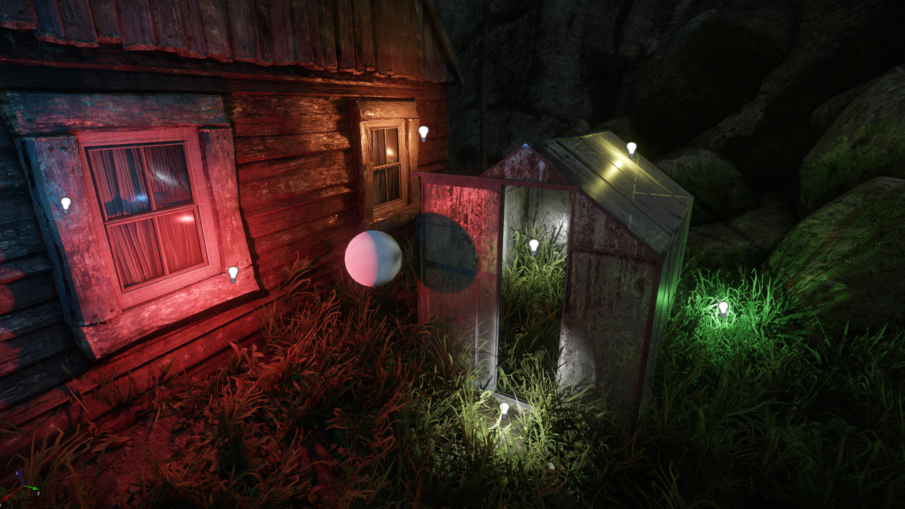
SSDO Цветовое кровотечение
SSDO кровотечение цвета — это простое и очень эффективное приближение светорассеяния, которое решает проблему слишком темного затенения окружающего пространства на ярких поверхностях.
Эту функцию можно переключить с помощью r_ssdoColorBleeding 0/1, и для ее включения требуется мозаичное отложенное затенение.
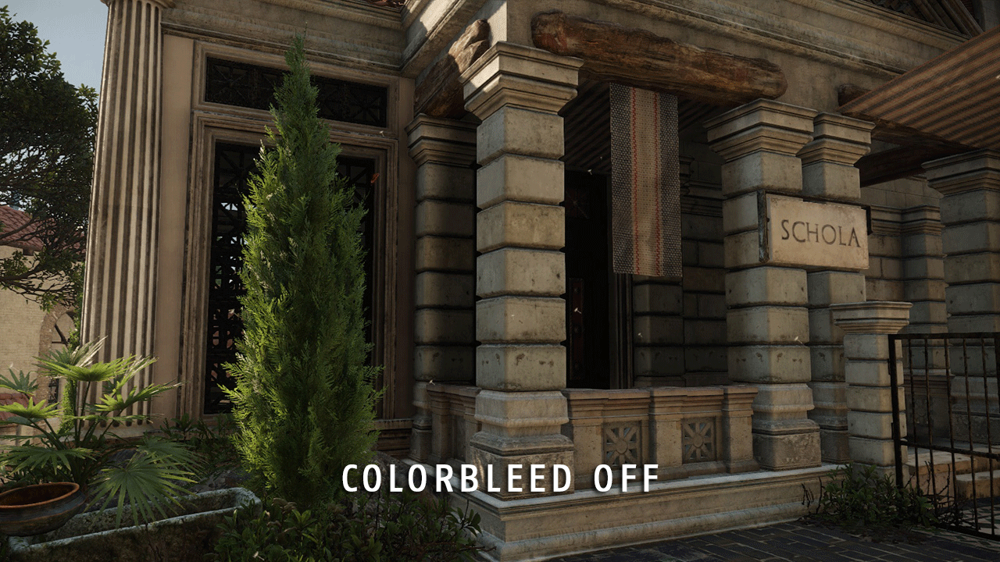
Улучшенная система LOD
Система LOD теперь учитывает средний размер треугольника при принятии решения о переключении между сетками LOD. Это дает значительно улучшенные результаты (меньше полигонов и меньше всплывающих окон LOD) при простом использовании коэффициента расстояния просмотра по умолчанию.
Используйте e_lodFaceArea 0/1 для переключения между предыдущей и новой системой.
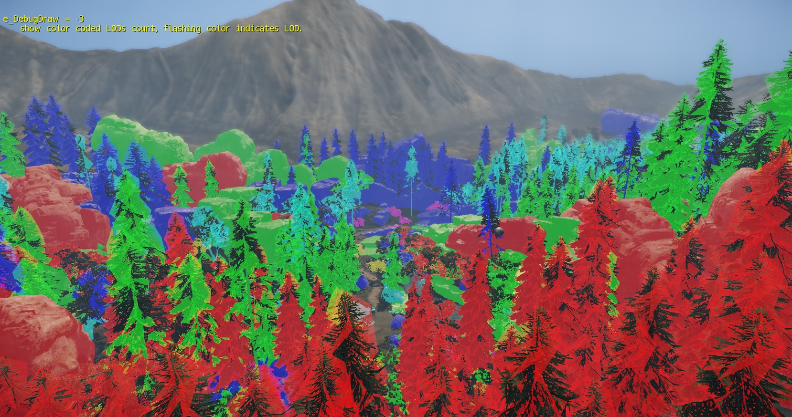
Выше показано e_debugdraw -3, минусовое значение по-прежнему кодирует ресурсы цветом, но удаляет наложение текстовой информации.
Улучшенное временное сглаживание
Наша улучшенная техника Temporal AA, поставляемая с Ryse PC, теперь доступна в CRYENGINE 3.7. При минимальных затратах на производительность он обеспечивает значительно более стабильное изображение за счет применения дрожания матрицы проекции.
Установите r_AntialiasingMode 3, чтобы включить.
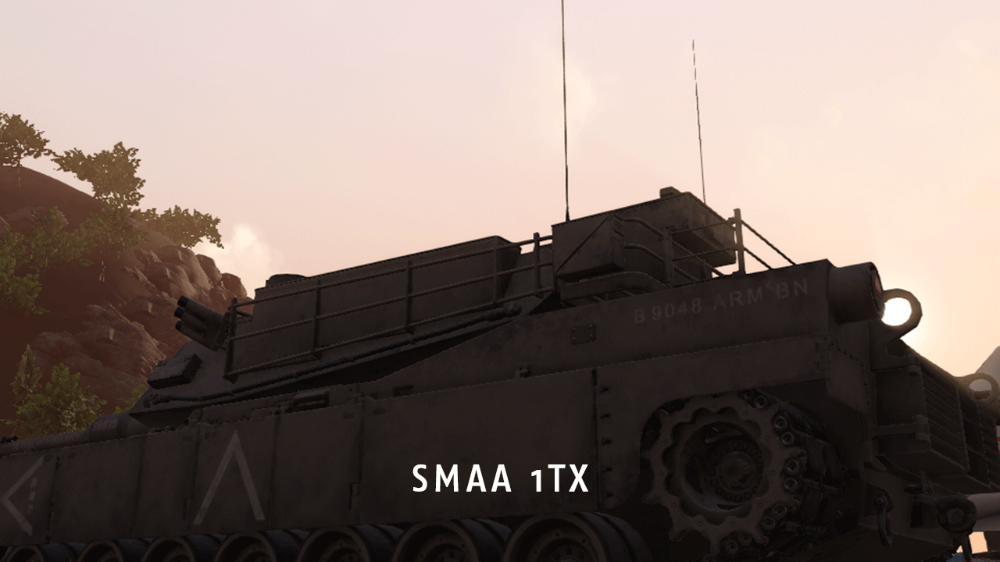
Объемы клипов
Новый Объемы клипов значительно упростить рабочий процесс по настройке внутреннего освещения за счет решения предыдущих проблем с утечкой света.
Объемы обеспечивают обрезку источников света и датчиков с точностью до пикселя и работают с мозаичными отложенными затенениями и объектами с прямой затенением, такими как волосы. Объемы клипов можно настроить в Sandbox с помощью Designer или импортировать из сетки static.
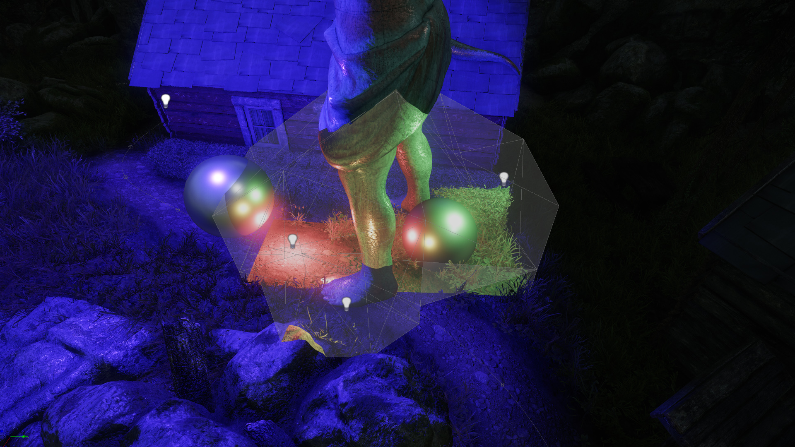
Произвольная форма объема клипа, содержащая 3 цветных точечных источника света и 1 дополнительный синий источник света, который влияет только снаружи.
В связи с появлением ClipVolumes, LightBoxes скоро станет устаревшим в будущей версии CRYENGINE.
Character Tool
Этот новый инструмент вамобъединяет редактор персонажей, импортер анимации, редактор сжатия анимации и редактор DBA в одном инструменте с полностью переработанным UI (более подробную информацию см. Character Tool).
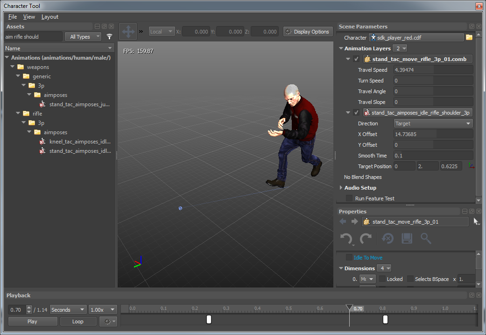
Уровень перевода аудио
Это совершенно новые и первые в отрасли системные серверы, выступающие в качестве уровня абстракции между CRYENGINE и промежуточным программным обеспечением для аудио. Благодаря полной доступности исходного кода аудио и подробной документации по интерфейсу можно подключить любое промежуточное аудио-программное обеспечение к ATL CRYENGINE.
Текущие реализации включают Wwise для профессионалов и SDL_mixer для простого и бесплатного аудиорешения. Никогда еще не было так легко реализовать звук в CRYENGINE, используя совершенно новую Браузер управления звуком.
Этот выпуск полностью заменяет предыдущее аудиорешение на основе FMOD. Более подробную информацию см. ATL Документы.
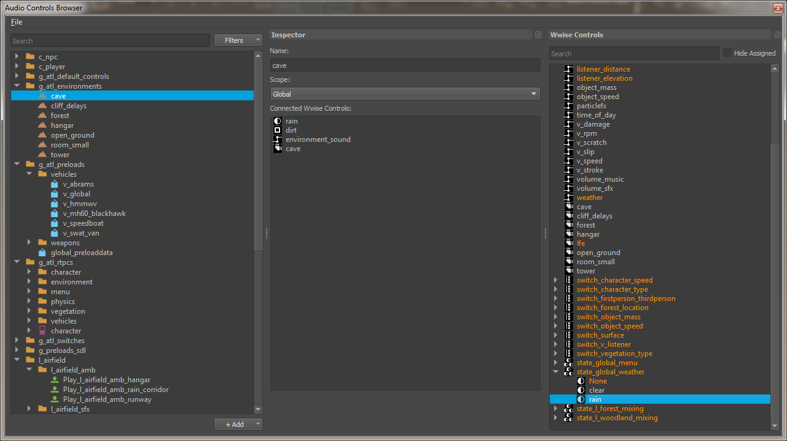
Пример контента
В CRYENGINE 3.7 мы представляем новый образец уровня под названием «Лесная местность». Этот уровень примерно в два раза больше Леса и имеет правильную настройку освещения PBR и высококачественные ресурсы, чтобы лучше продемонстрировать возможности рендеринга CRYENGINE.
Другие функции включают в себя несколько примеров просмотра треков, geomcache и демонстрационную область, где мы показываем некоторые из наших технологий рендеринга/анимации лиц. По мере продвижения мы будем добавлять на этот уровень больше контента, а также больше примеров демонстраций.
Мы удалили старый верный уровень «Лес», чтобы полностью сосредоточиться на новом демонстрационном контенте, гораздо более высоком качестве.
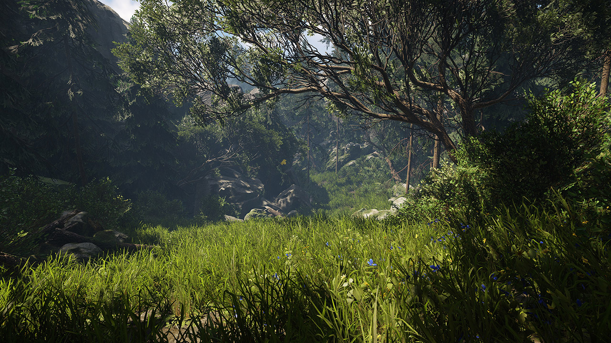 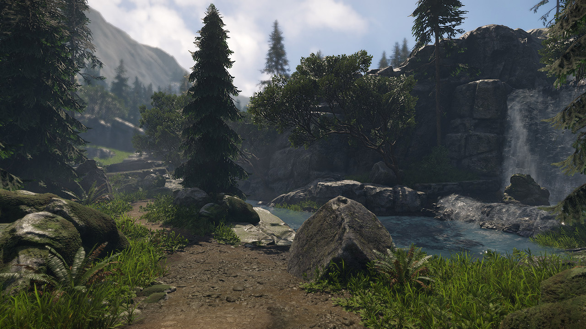 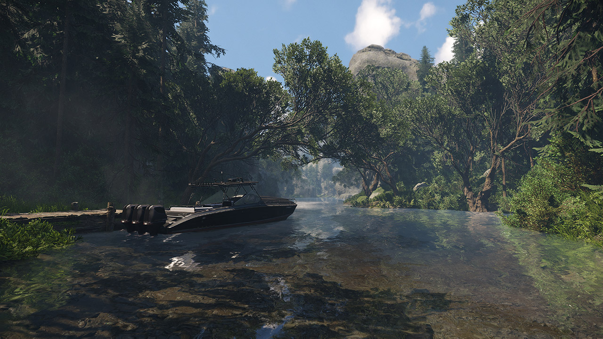 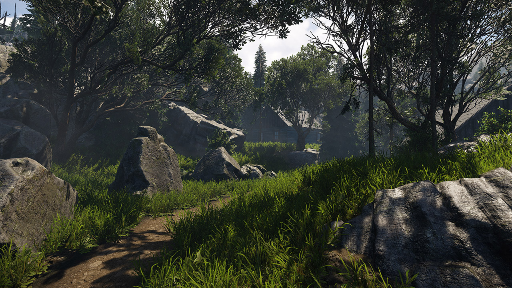 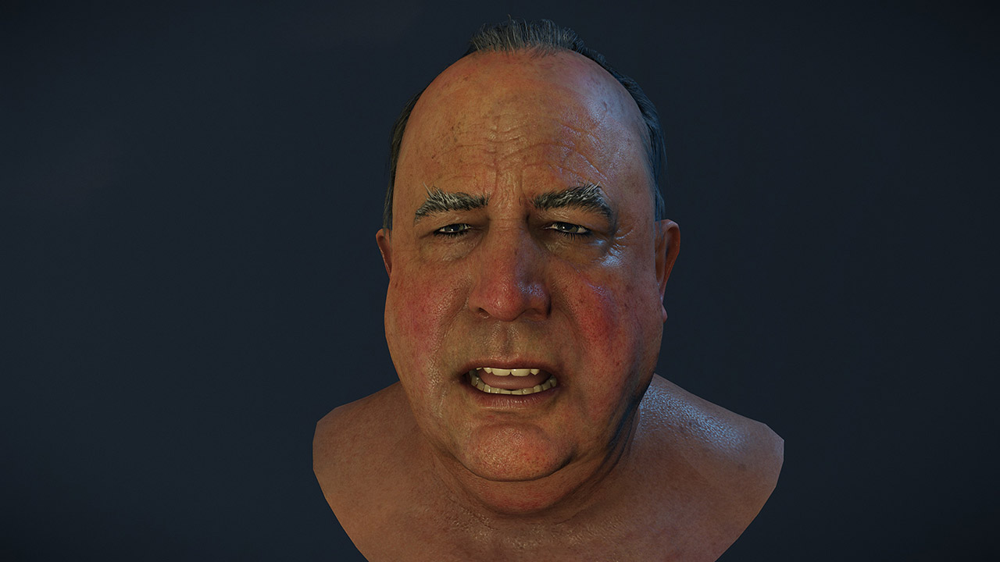 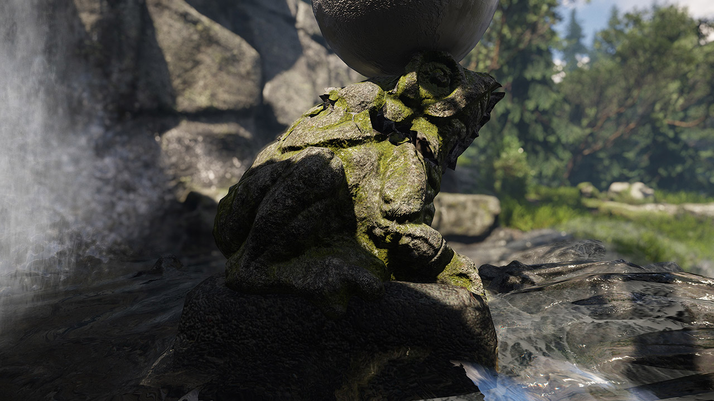
Редактор
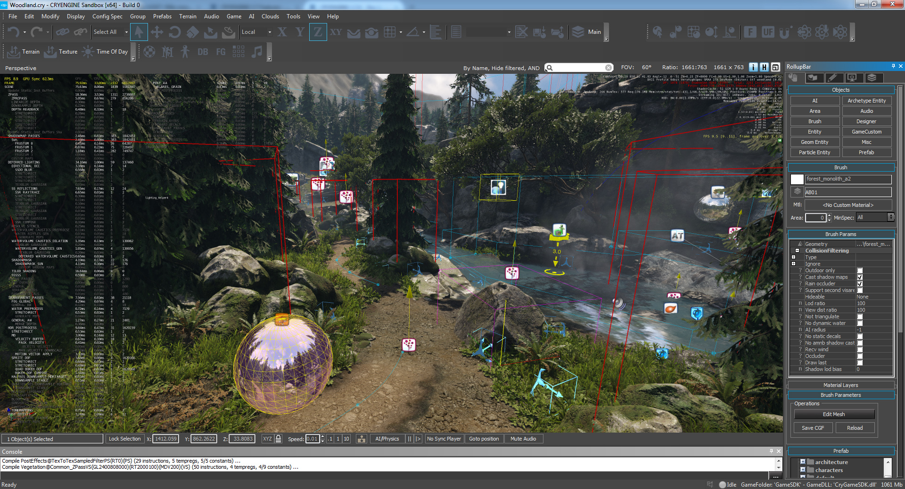
Новейший интерфейс CRYENGINE 3.7 Sandbox
- Новый: (CE-1497) (Flowgraph) Добавить среду:SkyMaterialSwitch FlowNode.
- Новый: (CE-4995) (Flowgraph) Добавлен вывод IsInWater и IsHeadUnderWater для узла FG ActorSensor.
- Новый: (Flowgraph) Добавьте входные данные для принудительного обновления узла Time:RealTime.
- Новый: (Material Editor) Увеличено максимальное значение экспозиции для далеких облаков.
- Новый: (Префаб) При извлечении отдельного объекта из префаба объект теперь выбирается правильно, что улучшает рабочий процесс.
- Новый: (Prefab) Prefab-Panel автоматически обновляет список объектов при изменении.
- Новый: (Растительность) Добавление минимальных и максимальных значений высоты и минимальных и максимальных значений уклона на панель растительности в представлении базы данных.
- Новый: (CE-4874) Добавлен тег (Редактор) для displayInfo в редакторе.
- Новый: (CE-594) UI: вкладки Smart Open не будут упорядочивать отображаемые элементы по пути/дате изменения и размеру.
- Новый: добавлена поддержка загрузки файлов .hdr в качестве исходного изображения для световых зондов с автоматическим преобразованием из продольных/широтных и поперечных карт.
- Новый: В редакторе теперь есть регулярный хук обновления в игре DLL, который можно использовать для обновления и отображения всевозможной вспомогательной информации.
- Новый: невозможно одновременно изменить свойства нескольких префабов.
- Новый: в меню «Инструменты» добавлена опция «Очистить данные реестра».
- Новый: В диалоговом окне выбора списка отображается ранее выбранный элемент.
- Новый: добавлены дополнительные пресеты FOV.
- Новый: обновлять сценарии сущностей и браузер дерева панелей при регистрации новых классов сущностей во время выполнения.
- Исправлено: (CE-2992) (LODGen) Редактор аварийно завершает работу при нажатии кнопки «Создать текстуры».
- Исправлено: (CE-2573) (Material Editor) Создайте материал в правильной папке.
- Исправлено: (CE-5348) (Редактор, Экспорт) Больше не экспортируется все группы объектов static объекта растительности во все типы поверхностей, у которых есть хотя бы один объект растительности, с использованием того же объекта static, примененного к нему.
- Исправлено: (CE-5410) (Ввод) Мышь становится активной за пределами области просмотра в игровом режиме.
- Исправлено: (CE-5036) (TOD) Изменение значения по умолчанию с «темного оформления» на «без оформления» приведет к тому, что время начала и окончания в TOD будет отображаться пустым.
- Исправлено: (CE-5209) (TOD) Удалите сообщение OnChanged, чтобы предотвратить повторную отправку TIMEOFDAYN_CHANGE.
- Исправлено: (CE-5038) (Trackview) Запретить создание последовательностей TV, если уровень не загружен.
- Исправлено: (CE-5256) (Flowgraph) Модули запускают только один экземпляр.
- Исправлено: (CE-5212) (Flowgraph) Инвентарь: EquipPackAdd работает неправильно.
- Исправлено: (CE-5180) (Flowgraph) Базовые сущности, удаленные через блок-граф, не сбрасываются при выходе из игрового режима.
- Исправлено: (CE-4608) (Flowgraph) Поле комментариев перемещается вниз при отмене и импорте.
- Исправлено: (CE-5568) (LensFlare) Сбой при отмене сразу после создания новой библиотеки приведет к сбою редактора.
- Исправлено: (CE-1737) (LensFlare) Редактор UI сломался при первом использовании.
- Исправлено: (CE-5003) Prefab-Undo работает неправильно.
- Исправлено: (CE-4980) Клавиша ввода Flowgraph не работает сразу, если включен AI/физика.
- Исправлено: (CE-5440) Снятие флажка с рендерингом «Растительность» на панели сворачивания без загрузки уровня приводит к сбою Sandbox.
- Исправлено: (CE-5416) GameVolume загружает два дополнительных свойства после перезагрузки скрипта.
- Исправлено: (CE-5162) Добавление двух кистей на уровень приводит к появлению сообщения об ошибке песочницы.
- Исправлено: (CE-5431) Панель сценариев Python: исправлена функциональность контекстного меню «Редактировать».
- Исправлено: (CE-4423) Скрыть/показать слои на панели инструментов: обновить вид рендеринга.
- Исправлено: (CE-4256) При выборе материала он отображается в списке «Используется на уровне».
- Исправлено: (CE-5094) Изменение правил игры на MP в редакторе приводит к сбою.
- Исправлено: (CE-4752) Плагин Perforce: Сбой при сохранении материала за пределами рабочей папки.
- Исправлено: (CE-5485) Переключение внутриигрового режима теперь осуществляется вне фактического вызова обновления, чтобы предотвратить сохранение обновлений после выхода из игры.
- Исправлено: (CE-5082) Прыжок в игре помечает слои как измененные.
- Исправлено: (CE-4916) Переключение помощников или переход на каркасный режим отображает/активирует всю растительность.
- Исправлено: (CE-1819) Редактор Flare: перезагрузка библиотеки «обнаруживает» изменения, когда их нет.
- Исправлено: (CE-3709) Удалена детальная спецификация из списка отбрасывания теней.
- Исправлено: (CE-4637) ERROR: Ошибка консоли при создании нового уровня «Не удалось получить информацию об уровне.....».
- Исправлено: (Flowgraph) По умолчанию отменяет регистрацию корневых графов модулей в flowsystem.
- Исправлено: (Префаб) Редактирование префаба приводит к сбою игры.
- Исправлено: (Префаб) Убрано ненужное вращение вокруг Z при создании префаба из выделения.
- Исправлено: (Префаб) Часто невозможно выбрать объекты внутри ограничивающей рамки префаба.
- Исправлено: (Префаб) Удаление префаба из библиотеки требует перезагрузки редактора, прежде чем он будет распознан как удаленный.
- Исправлено: (Trackview) Инициализировать глубину резкости в узле анимации.
- Исправлено: (Trackview) TrackView порядок узлов.
- Исправлено: (Транспортное средство) Закрытие и повторное открытие вкладки структуры в редакторе транспортных средств приводит к сбою редактора.
- Исправлено: Сбой в отладке при входе в игру в редакторе.
- Исправлено: Sandbox Плагины: NOT_USE_CRY_MEMORY_MANAGER включены по умолчанию.
- Исправлено: Плагины Sandbox: предотвращают загрузку плагинов, созданных в разных конфигурациях.
- Исправлено: обновлять карту теней static при каждом изменении объекта в редакторе.
- Исправлено: сетка вида сверху/спереди и слева отображается поверх полезной информации.
- Исправлено: Сбой в CryGame::CProjectileExtension::Finalize.
- Исправлено: Группировка и разгруппировка приводит к отмене выбора случайных объектов.
- Исправлено: Очистка данных реестра также сбрасывает ярлыки во время выполнения.
- Исправлено: Сломанная горячая перезагрузка.
- Исправлено: Неопределенные NOT_USE_CRY_MEMORY_MANAGER и _USRDLL для устранения несоответствия вызовов выделения/освобождения.
- Исправлено: Теперь мы снова сохраняем пустые субматериалы (пустой узел MaterialRef), чтобы предотвратить нарушение (смещение) идентификаторов субматериалов.
- Исправлено: Клонирование группы, содержащей невидимый источник света, приводит к зависанию редактора.
- Исправлено: Сбой редактора при выходе из конфигурации отладки.
- Исправлено: Возможна бесконечная рекурсия в преобразователе активов.
- Исправлено: Сбой при создании уровня без GameDll.
- Исправлено: CRASH: GHashSetBase<GHashNode<GASString,GASMember,GASStringHashFunctor>,GHashNode<GASSt[...]
- Исправлено: CRASH: GHashSetBase<GHashNode<GASString,GASMember,GASStringHashFunctor>,GHashNode<GASSt[...]
- Исправлено: CRASH: GASExecutionContext::Function2OpCode.
- Исправлено: CRASH: GFxMovieDefImpl::CreateMemoryContext" -> Все ошибки были вызваны нехваткой памяти во флэш-распределителе - GFX AMP необходимо отмечать в каждом кадре, иначе данные только выделяются, но никогда не освобождаются.
- Исправлено: PluginManager печатает неправильное имя плагина (всегда последнее из перечисленных).
- Исправлено: PluginManager также печатает имя плагина, который ему не удалось загрузить, если он не экспортирует метод "CreatePluginInstance".
- Исправлено: Больше нет CRY_ASSERT на DLL без плагинов (т. е. аудио-плагинов).
- Исправлено: Рисовать помощники по освещению области только тогда, когда выбрано освещение области.
- Исправлено: Проблема с удалением нескольких акваторий.
- Исправлено: Ошибка отмены при отмене сплошной области.
- Исправлено: Положение камеры, которая не была сериализована и восстановлена правильно при сохранении/загрузке уровня в Sandbox.
- Исправлено: Ошибка, связанная с тем, что метод PostNcDestroy() не вызывался, когда диалоговое окно при объединении с отключенной переменной автоуничтожения.
- Исправлено: SPyWrappedProperty регистрируется только как указатель, поэтому передайте его как pSPyWrappedProperty в PySetCVar.
- Оптимизированный: (CE-5059) (Material Editor) Удалена устаревшая кнопка создания кубической карты из редактора материалов. Кубические карты должны создаваться с помощью датчиков, позволяющих полностью отделить материалы и освещение.
- Оптимизированный: (CE-3602) (Material Editor) Скрыть нефункциональные элементы UI в Material Editor.
- Оптимизированный: (CE-5005) (TOD) Подсказка на кнопке записи всегда отображает «Начать запись».
- Оптимизированный: (Material Editor) Удалить неподдерживаемые режимы генерации текста.
- Оптимизированный: Удалить LightShapes. Заменено на Объемы клипов.
- Оптимизированный: удалены импорт анимации, редактор сжатия анимации и редактор символов — заменены на Character Tool.
- Оптимизированный: Удалена устаревшая кнопка Voxel Painter с панели ландшафта.
CryDesigner
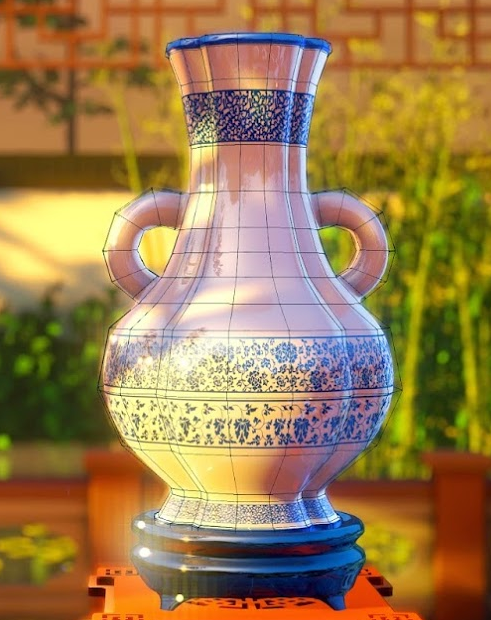
Дизайнерский объект с использованием новой техники Subdivision.
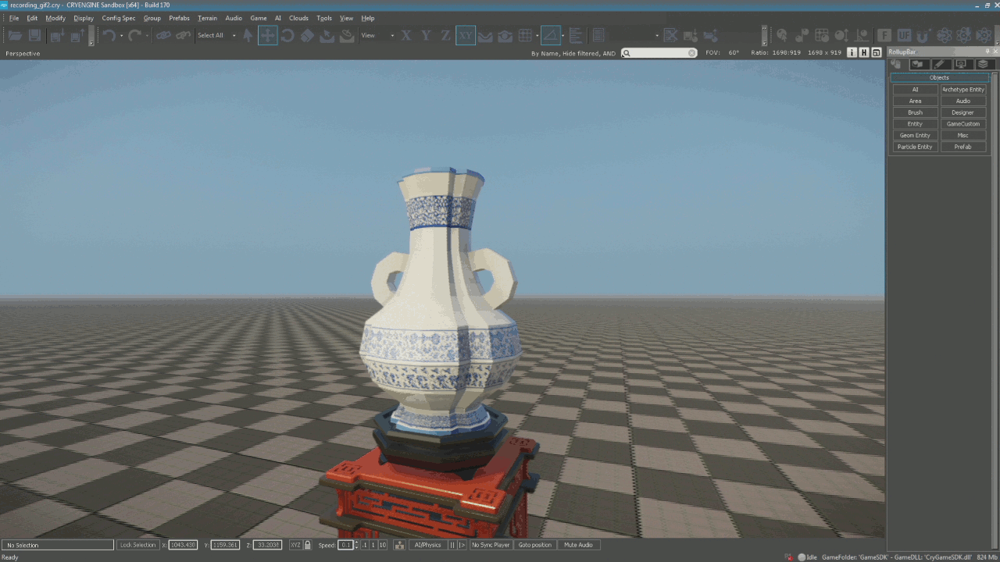
Инструмент для разделения с полуострыми складками.
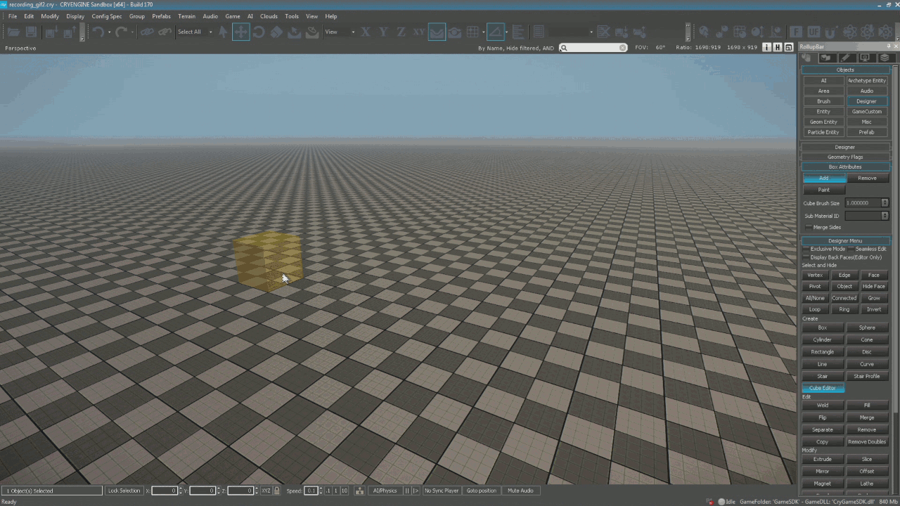
Редактор кубов
Если вы хотите увидеть больше фотографий, нажмите на эту ссылку Галерея [Дзен-сад]
- Новый: добавлен инструмент «Разделение» с полурезкой складкой и обработкой границ. - Руководство по подразделениям
- Новый: Разработан редактор кубов с функцией размещения осей. - Руководство по редактору кубов
- Новый: Добавлен проект CryDesigner PlugIn и перемещены сюда все файлы, связанные с Designer, AreaSolid и ClipVolumeObject.
- Новый: добавлена функция объединения выбранных граней в существующий инструмент «Объединение» в дополнение к объединению выбранных объектов дизайнера.
- Новый: добавлена проверка границ в инструменте «Скос» в виде расширения краев.
- Новый: кнопка плавного включения отображается на панели дизайнера.
- Новый: добавлена опция выбора, удерживающая SPACE, чтобы можно было выбрать только грани, выбирая только маленькие кубики.
- Новый: Bevel Tool — реализовано первое и второе разделение грани, в которых встречаются три точки.
- Новый: добавлен флаг «Исключить столкновение» на панели «Флаги геометрии» в CryDesigner.
- Исправлено: (AreaSolid) (CE-4527) Ошибка, вызванная неправильной рамкой твердого тела пустой области при нажатии на сообщение об ошибке и направлении камеры на твердое тело области.
- Исправлено: (AreaSolid) Ошибка, возникающая при входе в режим AreaSolid.
- Исправлено: (CE-4357) Ошибка, связанная с исчезновением ранее созданного объекта дизайнера после создания объекта-коробки.
- Исправлено: (CE-4453) Ошибка в ожидаемом поведении, поскольку ESC постоянно нажимается.
- Исправлено: (CE-4457) Сделана точка поворота, которая сохраняется в середине ограничивающего прямоугольника каждый раз, когда создается новая примитивная форма.
- Исправлено: (CE-4455) Ошибка в работе инструмента «Лестница», вызванная последовательными щелчками кнопки мыши в окне просмотра.
- Исправлено: (CE-5101) На панели дизайнера снова появились кнопки «Привязка к сетке» и «Экспорт».
- Исправлено: (CE-5102) Зонды среды стали невидимыми в режиме исключения.
- Исправлено: (CE-5250) Изменен каталог по умолчанию для экспорта объекта дизайнера в виде obj, cgf и grp на ../GameSDK.
- Зафиксированный: (CE-5484) Ошибка, связанная с невозможностью увеличения высоты конуса и цилиндра, когда курсор находится ни на чем.
- Исправлено: (CE-5469) Ошибка, связанная с перемещением объекта дизайнера с включенной функцией «Сохранять центр поворота» после преобразования граней, ребер или вершин.
- Исправлено: Создание неправильной нижней и верхней грани, как при создании прямоугольника на местности.
- Исправлено: Ошибка выбора цикла, связанная с исключением выбранного края при выборе краев вокруг границы.
- Исправлено: Ошибка, связанная с необновлением обратной стороны граней с помощью группы сглаживания.
- Исправлено: Ошибка при рисовании прямоугольника или прямоугольника на плоскости, которая не параллельна главной оси.
- Исправлено: Добавлена возможность плавного редактирования, поскольку выбрано более двух объектов дизайнера.
- Исправлено: Ошибка сбоя, вызванная выходом из инструмента рисования линий после отмены.
- Исправлено: ошибка, связанная с тем, что объект, который был выделен в инструменте объектного режима, оставался выделенным после выхода из инструмента объектного режима.
- Исправлено: ошибка, связанная с входом в бесконечный цикл при загрузке объекта дизайнера, имеющего большое количество полигонов.
- Исправлено: Полученный узел сетки в сериализации не сохранился при отмене объекта конструктора.
- Исправлено: Сетка кисти дизайнерского объекта обновляется при изменении информации о текстуре.
- Исправлено: Расширены диапазоны смещения, масштабирования и поворота от 1000 до 100000 на панели текстур дизайнера.
- Исправлено: В декомпозере многоугольников включено изменение порядка индексов при создании треугольников из выпуклых.
- Исправлено: введено ограничение на количество полигонов при сохранении объекта дизайнера, чтобы объект дизайнера не создавал узел сетки, если в нем есть полигоны, превышающие максимальное количество.
- Исправлено: Сбой при отмене объекта дизайнера после перемещения вершин/ребер/граней.
- Исправлено: Можно редактировать объекты дизайнера в префабе, даже когда префаб закрыт.
- Исправлено: ошибка, связанная с невозможностью выбрать объект после входа в режим AI/физического моделирования.
- Исправлено: выделение стало более прозрачным, чтобы лицо внизу было видно более четко.
- Исправлено: ошибка, приводящая к сбою, поскольку лестница создается с шагом, равным или в n раз превышающим размер сетки привязки.
- Оптимизированный: (AreaSolid) Если выбрано пустое твердое тело, режим дизайнера будет режимом по умолчанию.
- Оптимизированный: Переработан класс CBrushDesignerMoveTool.
- Оптимизированный: расчет триангуляции путем создания треугольников только из измененных областей. Раньше каждый раз все регионы триангулировались.
- Оптимизированный: Удален SBrushPlaneEx, и его функция была объединена с SBrushPlane.
- Оптимизированный: в кодах переименовано в «Разделить» на «Клип».
- Оптимизированный: в кодах «Faceter» переименован в «PolygonDecomposer».
- Оптимизированный: переименован в Pivot2Center 2 Pivot2Bottom.
- Оптимизированный: Рефакторинг кодов дизайнеров путем выделения процедур выбора элементов в класс CBrushDesignerElementManager (вершины, ребра и грани).
- Оптимизированный: Изменена функция CBaseBrush::Update(), чтобы она отвечала за все обновление сетки, а другая функция UpdateXXX() переместилась в часть private.
- Оптимизированный: Убрано все, что касается старой солидной системы, в кодах.
- Оптимизированный: Отключены все коды MFC UI из кода инструментов CryDesigner.
Рендерер
Tiled-Shading for Glass обеспечивает физически точное взаимодействие точечного света, окружающего освещения и теней на стеклянных объектах.
- Новый: поддержка плиточного затенения для Glass.
- Новый: Физический BRDF для Glass.
- Новый: Прием солнцезащитных теней для стекла.
- Новый: добавлено растекание цвета SSDO (требуется плиточное отложенное затенение).
- Новый: добавлена поддержка использования карты характеристик растительности.
- Новый: применение сглаживания для уменьшения полос в темных сценах.
- Новый: Добавлен 8-битный формат текстур signed (для целей рендеринга).
- Новый: Улучшено качество SMAA 2TX (плюс дополнительные изменения WIP для точного воспроизведения).
- Новый: Поддержка парсера шейдеров для Texture3D и RWTexture3D.
- Новый: поддержка UAV для Texture3D.
- Новый: Введена общая структура атрибутов материала и соответствующие функции для кодирования/декодирования gbuffer.
- Исправлено: (CE-5046) Обновлять константы шейдера при изменении спецификации.
- Исправлено: (CE-5387) Исправлена ошибка компиляции шейдера в каркасном режиме.
- Исправлено: (CE-4871) Исправлен множитель солнечного блика в стандартном пути затенения.
- Исправлено: (CE-5154) Удалены устаревшие лучевые режимы; r_beams 0/1 теперь переключает рендеринг лучей.
- Исправлено: (CE-5299) Исправлен расчет нормалей двустороннего стекла.
- Исправлено: (CE-5053) Проверьте наличие нулевого указателя перед доступом к CRenderObject::m_pRenderNode.
- Исправлено: (CE-3436) Исправлена проблема с отбрасыванием теней.
- Исправлено: (CE-4932) Использовать кубическую карту для полупрозрачности в стандартном отложенном затенении (теперь поведение соответствует мозаичному затенению).
- Исправлено: (CE-5293) Исправлено сообщение об ошибке парсера шейдера (USE_DEPTH_MASK).
- Исправлено: (CE-248) Пример теневой маски для зонального освещения в мозаичном затенении.
- Исправлено: (CE-5164) Убрано утверждение в CDeferredShading::ReleaseData, которое срабатывает при завершении работы (завершение работы рендерера выполняется в RT). Функция должна быть безопасно вызвана из потока рендеринга при обеспечении синхронизации.
- Исправлено: (CE-5135) Предотвратить обработку Flash-RT как EnvMap-RT.
- Исправлено: (CE-5265) Отключить отбрасывание теней на основе CVar 'e_ObjShadowCastSpec' вместо спецификации sys.
- Исправлено: (CE-3335) Исправлена генерация скорости gbuffer при включенной тесселяции.
- Исправлено: (CE-5386) Увеличен размер SHDataBuffer, чтобы избежать предупреждения о перераспределении.
- Исправлено: (CE-5403) Используйте m_TempMatrices[0][2] для каскадного смешивания теней вместо m_TempMatrices[2][0], поскольку m_TempMatrices[2][0] используется для прямых теней.
- Исправлено: (CE-5706) Visareasperpixel 0/1 сломан.
- Зафиксированный: разметка трафарета Visarea, когда r_VisAreasClipLightsPerPixel=0.
- Исправлено: Зональные светильники с плиточным плафоном.
- Исправлено: Исключение с плавающей запятой из-за ошибки драйвера при переключении в полноэкранный режим.
- Исправлено: повторно добавлен рендерер NULL и выделенный сервер.
- Исправлено: исправлено несогласованное использование m_nGPUs и запрос, активен ли MGPU; всегда используйте GetActiveGPUCount сейчас, чтобы получить количество графических процессоров.
- Исправлено: использовать полную интенсивность SSDO при создании зондов.
- Исправлено: SS Отражается, когда поддержка MGPU отключена в системе MGPU.
- Исправлено: Установите значение по умолчанию для переменной каскадного смешивания, чтобы избежать сообщения об ошибке консоли.
- Исправлено: Артефакты смешивания теней в очень темных условиях: убедитесь, что значения смешивания в сумме составляют как минимум единицу даже при квантовании до 8 бит.
- Исправлено: Начальная частота обновления при создании устройства не сохраняется должным образом. Могут возникнуть проблемы с функцией «блокировки fps», если установка окна не проходит через путь изменения кода перед воспроизведением. По сути, тогда это будет просто обычная vsync.
- Исправлено: Подробное поведение карты.
- Исправлено: Пропускать вызовы отрисовки при сбое активации любого этапа шейдера из-за того, что шейдеры все еще компилируются. Это позволит избежать различных ошибок D3D и сбоев драйверов.
- Исправлено: Сбой в шейдеркегене, если не созданы PS3 или ксеноновые CVar.
- Исправлено: PostEffects.cpp static Vec2/Vec4 инициализируются как NaNs при отладке.
- Исправлено: Размытие в движении нарушено на некоторых объектах с низкими и средними характеристиками.
- Исправлено: Ambient при прямом проходе (флаг _RT_AMBIENT больше не устанавливается в движке и устарел).
- Исправлено: обновлять карту теней static при каждом изменении объекта. Имеет несколько ложных срабатываний, но ничего существенного, критического для производительности.
- Исправлено: Небольшие исправления затенения вперед (рельеф, детальное картографирование).
- Исправлено: Кэшировать неиспользуемые константы материала на будущее, поскольку они могут использоваться другими вариантами шейдеров.
- Исправлено: Используйте материал renderNode в CDeferredCollisionEventOnPhysCollision.
- Зафиксированный: Тип данных цвета не обновляется в шейдере из диалогового окна материала.
- Исправлено: Очищены буферы констант, добавлены масштабы текстур и смещения при обновлении.
- Исправлено: Поменяны местами позиции enum в Auto2D и Dyn2D, так что файлы материалов автоматически используют правильный новый элемент enum.
- Исправлено: "CRASH: DeviceInfo::ProcessSystemEvent" — применен тот же обходной путь FPE, что и для других функций DXGI.
- Исправлено: создание маски глубины при мозаичном затенении.
- Исправлено: Очистка именования, передачи и конфигурации параметров материала.
- Исправлено: Еще один источник утверждений в LookupTexPriority.
- Исправлено: отложенные декали теперь работают с неортогональными преобразованиями (например, растянутыми частицами). Упрощены и оптимизированы преобразования, исправлены запутанные метки осей.
- Исправлено: ореолы SSS. Буфер временного освещения не был очищен и содержал данные MB.
- Оптимизированный: (CE-5181) Удален BMP из поддерживаемых форматов файлов захвата, вместо этого используйте 24-битный TGA.
- Оптимизированный: отмечено MSAA как устаревшее.
- Оптимизированный: отдельные типы текстур для целей рендеринга воды (Auto-Cube и Auto-2D) и целей динамической флэш-рендеринга (Dyn-2D).
- Оптимизированный: Удален устаревший SSAO и очищены остатки воксельного ландшафта.
- Оптимизированный: удалить вычисления LOD из пути к коду рендеринга.
- Оптимизированный: Удалить код кэша конкретных объектов рендеринга SPU.
- Оптимизированный: Удалены устаревшие пропуски ночного видения и зоны обзора.
- Оптимизированный: Удалена поддержка конвейера рендеринга для устаревшего переднего освещения.
- Оптимизированный: Удалены устаревшие методы/проходы рендеринга. : Прямая каустика, ShadowPass, ShadowGenPS.
- Оптимизированный: Несколько изменений для уменьшения задержки кадров на PC (измерение реакции на ввод с геймпада в игре с использованием высокоскоростной камеры).
- Оптимизированный: поддержка режима блокировки FPS для правильной вертикальной синхронизации. Синхронизируется с закрытием доступной частоты обновления (через интервал представления в диапазоне 1..4) на основе частоты обновления монитора и настройки sys_maxfps.
- Оптимизированный: Удален устаревший TXAA, характерный для nVidia.
- Оптимизированный: Из шейдеров удалено устаревшее прямое освещение (солнце теперь обрабатывается явно, для точечных источников света мы будем полагаться на плиточное затенение).
- Оптимизированный: добавлены определения для точек ренормализации диапазона LDR/HDR.
- Оптимизированный: Прямая выборка теней на основе динамического ветвления.
- Оптимизированный: Удалены устаревшие шейдеры.
- Оптимизированный: Удален устаревший проход дождя без gbuffer.
- Оптимизированный: Прекращена поддержка применения SMAA к двум сэмплам MSAA.
- Оптимизированный: Удалена устаревшая техника размытия изображения при движении камеры.
- Оптимизированный: Очистки в постобработке HDR, удалены устаревшие пути кода.
- Оптимизированный: Отсутствующие функции IRenderNode::Clone() теперь всегда доступны.
- Оптимизированный: CWaterVolumeRenderNode::OffsetPosition теперь тоже постоянно влияет на физику.
- Оптимизированный: Удалить SRenderObjectModifier.
- Оптимизированный: использовать выровненные структуры данных для мозаичного затенения.
- Оптимизированный: удалить неиспользуемые перестановки шейдеров.
- Оптимизированный: Светоотражатель, затеняющий плитку.
- Оптимизированный: Из рендерера удалены устаревшие файлы: DXUT, CTileRaster, RendererMeshDataHeap, TangentSpaceCalculation.
- Оптимизированный: Небольшие изменения в характеристиках системы.
- Оптимизированный: Удалите некоторые старые DXSDK, некоторые вещи все еще отсутствуют. Пришлось переименовать некоторые типы, вроде изменились. Удалены CD3D9Renderer::D3DError и CD3D9Renderer::Error, поскольку они не использовались, но зависели от DXErr, который больше не поддерживается. Связанные библиотеки в CryInput заменены заголовками Microsoft SDK.
- Оптимизированный: Переместить матрицы модификации текстур в PB вместо PI (исправляет создание экземпляров с мозаикой текстур).
- Оптимизированный: исправить и снова включить пакетную обработку вызовов отрисовки скинов.
- Оптимизированный: используйте библиотеку GPA_2014_R2 вместо GPA_2012_R15.
- Оптимизированный: Из движка удалено "SetMaterialFloat".
- Оптимизированный: Удалена заглушка CryD3DCompiler, поскольку теперь мы можем напрямую использовать функцию D3DCompile, перейдя на VS 2012.
- Оптимизированный: Единый материал-парсер и переводчик.
- Оптимизированный: Имена с префиксом enum в IStereoRenderer.h в соответствии с рекомендациями по кодированию.
- Оптимизированный: разделение конфигураций консоли на общий раздел и раздел для конкретной платформы; Настройки CVar для конкретной платформы игнорируются при переключении системных спецификаций на PC.
- Оптимизированный: Сделаны запросы ShaderEnum независимыми от CString.
3dEngine
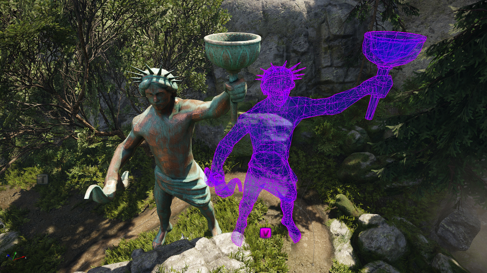
ClipVolumes поддерживает создание произвольных форм с помощью дизайнера, предоставляя полный контроль над обрезкой света.
- Новый: Громкость клипа поддерживает создание произвольной формы для отсеивания света. Также можно загружать CGF для имитации формы существующих сеток.
- Новый: (GeomCache) Поддержка взаимодействия физики с кешем Geom.
- Новый: (CryPak) Добавлен CryFatalError для пустых имен zip-файлов (неверных zip-файлов).
- Новый: Автоматический выбор размера пула потоковой передачи текстур на основе доступного VRAM, если sys_spec_TextureResolution не задан явно.
- Новый: Создание прокси-объектов игровых объектов из игрового кода.
- Новый: добавлена проверка требований CPU. Проверьте поддержку SSE1,2,3 и убедитесь, что она присутствует (иначе не запускайте двигатель).
- Новый: добавлены функции сериализации для CryFixedStringT<size_t> и CryStackStringT<class, size_t>.
- Новый: добавлен класс HalfEdgeStructure.
- Новый: Добавьте проверку Point_Sphere в утилиты GeomOverlap.
- Новый: Многопоточная фильтрация MIP-карт.
- Новый: Отсечение окклюзии: новая переменная для установки ограничения на количество полигонов (e_CoverageBufferRastPolyLimit).
- Новый: Отсечение окклюзии: новая переменная для задержки прерывания растеризации, когда основной поток готов принять данные (e_CoverageBufferEarlyOutDelay).
- Исправлено: (CE-5382) (MergedMeshes) Сбой при изменении размера пула в чистой игре.
- Исправлено: (CE-5073) (GeomCache) Исправлена известная проблема, при которой кэши short приводили к прерыванию потока при зацикливании.
- Исправлено: (CE-5742) (GeomCache) Кэш Geom зависает в лесу: состояние задания потока заполнения очищается, когда FillFrameAsync возвращается раньше.
- Исправлено: (CE-4548) DisableRuntimeFileAccess: теперь всегда разрешать доступ в режиме редактирования; перемещены вызовы, чтобы более точно соответствовать началу/концу игрового процесса; разрешить проверку доступа без предупреждающего сообщения; более последовательное использование CDebugAllowFileAccess; отключена загрузка файлов частиц во время выполнения, контролируемая CVar.
- Исправлено: (CE-4667) Проблема многопоточности при проверке содержания области.
- Исправлено: (CE-5107) Учитывать вложение символов CGA LOD при потоковой передаче текстур.
- Исправлено: (CE-4965) Вызовы функции сценария OnPropertyChange теперь заранее проверяют, существует ли эта функция в таблице сценариев объекта.
- Исправлено: (CE-5621) Сбой при чтении файлов фрагментов *без* фрагментов.
- Исправлено: (Физика) Проблема с решателем квадратичного полинома.
- Исправлено: (Физика) Проблема с физикализацией многокомпонентных кистей.
- Исправлено: (GeomCache) Сбой с e_geomCacheDebugDrawMode == 3 из-за непотокобезопасного дополнительного рендеринга из задания рендеринга. Исправление — переместить отладочную отрисовку в основной поток.
- Исправлено: (GeomCache) Шкала скорости не работает в AnimGeomCacheNode.
- Исправлено: (CrySystem) Исправлено возможное переполнение буфера при использовании профилировщика.
- Исправлено: (CrySystem) введено системное событие ESYSTEM_EVENT_FAST_SHUTDOWN, которое выдается при выходе системы вместо события ESYSTEM_EVENT_SHUTDOWN, которое было переименовано в ESYSTEM_EVENT_FULL_SHUTDOWN и теперь выдается при полном выключении системы.
- Исправлено: Использование мусорного символа при установке имени потока long.
- Исправлено:fpe в ломкости.
- Исправлено: Возможный сбой во время выключения.
- Исправлено: Позиция удаляемого узла mergedmeshrendernode не соответствует положению, в котором он был вставлен в сетку узлов.
- Исправлено: Перерезание веревки не инициализировано pMesh в событии.
- Исправлено: исправление переполнения int в boolean2d.
- Исправлено: Более строгие проверки границ в решателе pre-cg. Больше проверок диапазона в решателе Pre-CG для твердых тел.
- Исправлено: Проблема с импульсом столкновения игрока.
- Исправлено: использовать зональное освещение для солнца только тогда, когда включена поддержка зонального освещения.
- Исправлено: Дополнительные исправления в разрешении доступа к файлам во время выполнения, чтобы более точно соответствовать началу/концу игрового процесса для одиночной и многопользовательской игры. e_ParticlesAllowRuntimeAccess сейчас = 1 по умолчанию; регистрируется только тогда, когда это запрещено.
- Исправлено: Используйте после бесплатной версии в CGeomCache::Release.
- Исправлено: Используйте после free в CEntity::~CEntity (m_szName освобождается до m_proxy).
- Исправлено: Неинициализированный SMMRMInstanceContext::rotationOrigin.
- Исправлено: Используйте после бесплатного режима в CFileIndexingThread.
- Исправлено: WaitForSingleObject нельзя использовать с _beginthread в CTaskManager::CThread.
- Исправлено: Использовать после освобождения static TActionHandler<CUIInput> (используемый пул CryName уже уничтожен).
- Исправлено: Удалить утверждение в CTCPStreamSocket::~CTCPStreamSocket (m_socket никогда не равно 0).
- Исправлено: Проблема с увеличенными объемами воды.
- Исправлено: добавлено ограничение после перенормировки.
- Исправлено: Сбой при отладке из-за неправильного приведения типа значения, который должен содержать строку, но пытается присвоить ее и привести к const char.
- Исправлено: Удаление виртуального вызова в Деструкторе.
- Исправлено: Изменено поведение CreateResources(), теперь текстуры не загружаются при создании, загрузка откладывается до RefreshResources().
- Исправлено: восстановить поведение по умолчанию для пула сущностей (файл конфигурации пуст, а пулы всегда отключены в MP и редакторе, поэтому его все равно не следует использовать).
- Исправлено: Убедитесь, что автоматически выбранный размер пула потоковой передачи не перезаписывается при изменении спецификаций.
- Исправлено: Assert ((Source->m_Flags & DLF_LIGHTTYPE_MASK) != 0) для освещения в окне предварительного просмотра редактора.
- Исправлено: Защита от висящего объекта PTR в GetPhysForeignName.
- Исправлено: Неправильная проверка размера и выравнивание для взаимосвязанного односвязного списка в 32-разрядной версии.
- Исправлено: Сделать заголовок CBaseLibraryManager не зависящим от известного класса CBaseLibrary.
- Исправлено: Сделаны функции CFileUtil независимыми от CString.
- Исправлено: Настройка вызовов функции форматирования строки, чтобы избежать возможного небезопасного использования передачи той же строки, которую мы форматируем, в качестве параметра функции.
- Исправлено: Ошибка, связанная с неправильным использованием vec3 в методе IsIncludePointsInConvexHull() в BaseObject.cpp.
- Оптимизированный: (CE-2756) Очищен вид e_mergedmeshesdebug.
- Оптимизированный: (Растительность) Изменение растительности.
- Оптимизированный: Улучшена согласованность флагов столкновения с верёвкой персонажа.
- Оптимизированный: Переработано автоматическое определение системных характеристик.
- Оптимизированный: Избегайте создания bsp-дерева тома клипа во время выполнения игры — вместо этого сериализуйте его как специальный фрагмент в сетку cgf.
- Оптимизированный: Рефакторинг системы громкости отложенного светового клипа: работает с мозаичным и отложенным затенением. Тома клипов создаются либо непосредственно с помощью CryDesigner, либо импортируются из cgfs. Работает с передними объектами и частицами (в зависимости от их положения поворота). Области видимости рассматриваются как экземпляры объемов клипа, предыдущее поведение (отсечение по объекту, а не по пикселям можно восстановить с помощью cvar). Режим смешивания источников света и кубических карт на порталах.
- Оптимизированный: Удаление флага области видимости AlwaysDrawOutdoors, поскольку он, похоже, нигде не используется и больше похож на исправление какой-то ошибки, чем на реальную функцию.
- Оптимизированный: удалить опцию «дешевый свет».
- Оптимизированный: C3DEngine::GetObjectsByFlags теперь всегда доступен.
- Оптимизированный: измените значение по умолчанию для e_LightVolumesDefault на 1.
- Оптимизированный: Восстановлен код ландшафта, который использовал decalnode::clone().
- Оптимизированный: CRenderObject::m_nLod -> union для специального использования.
- Оптимизированный: Разделить задание заполнения геомкеша на задания обновления преобразования с высоким приоритетом и обновления сетки.
- Оптимизированный: Удалена избыточная обработка запроса на загрузку текстур и параметров функции.
- Оптимизированный: Удален специфичный для ISkeletonAnim::GetRootTransform.
- Оптимизированный: Скорректированы размеры пула потоковой передачи текстур в соответствии с требованиями RysePC.
- Оптимизированный: используйте VectorMap вместо std::map.
- Оптимизированный: DynArray улучшения и рефакторинг: распределитель по умолчанию теперь хранит указатель на исходный распределитель в памяти для совместимости между модулями. Переработаны шаблоны распределителей для использования одной многоцелевой функции alloc(). Компоненты template подверглись рефакторингу, чтобы сделать их более независимыми: SmallDynStorage вместо SmallDynStorage<T, I>. Схема более быстрого хранения емкости в SmallDynStorage. FixedDynArray и StaticDynArray теперь корректно работают с типами, отличными от POD, создавая и разрушая элементы только при использовании. Удалены классы FixedDynStorage, RawStorage, InitStorage. Различные мелкие исправления и оптимизации. Перемещен код для ясности.
- Оптимизированный: Изменен движок и песочница на буст 1.55.
- Оптимизированный: удалено «GetTextureName» из декальнода.
- Оптимизированный: удален неиспользуемый тип MAT_ENTITY; встраивание кода CLoaderCGF::ProcessMaterials(), чтобы избавиться от запутанного имени функции.
Частицы
- Новый: Переопределен PlaneAlignBlendDistance для частиц.
- Новый: Перемещение параметра масштаба мягких частиц из материала в редактор частиц.
- Новый: Параметр масштаба частиц может сделать частицы как мягче, так и тверже (не только тверже).
- Новый: добавлены частицы, уменьшающие размер и срок службы в зависимости от параметра плотности.
- Новый: К частицам добавлен параметр сферической аппроксимации, позволяющий выбирать между стандартными и сферическими расчетами тангенса.
- Новый: В шейдер частиц добавлена карта свечения.
- Исправлено: (CE-4267) Неработающие нормали карты рельефа (плохое размещение #if). Исправлены проблемы с кривизной: теперь влияет только на нормали освещения, а не на расширение ближней геометрии.
- Исправлено: (CE-5103) FPE во вращении вихря частиц.
- Исправлено: (CE-5514) Память перезаписывается, когда заканчивается память вершин частиц.
- Исправлено: (CE-5456) Проблемы со столкновениями и синхронизацией, из-за которых дочерние декали не появлялись и не прилипали; исправлен бесконечный просмотр столкновений частиц.
- Исправлено: (CE-5327) Расширение сферического рендеринга теперь основано на самой короткой оси, исправлены ошибки растяжения и аспекта.
- Исправлено: Эмиттеры теперь обновляются, когда e_ParticlesThread = 0.
- Исправлено: Использование первых трёх GSM для теней частиц.
- Зафиксированный: Сбой во время обратного вызова обновления физической области.
- Исправлено: Убедитесь, что вершины частиц никогда не оказываются точно в плоскости z=0 при использовании «Сферической аппроксимации».
- Исправлено: Не перезаписывайте альфа-частицу на преломляющих частицах.
- Исправлено: Мягкие частицы изменены с линейного на обратно-квадратичный показатель.
- Исправлено: На мягкие частицы также влияет приближение камеры, а не только поверхность. делает переходы к мягким частицам более плавными.
- Исправлено: параметры исправления глубины и карты свечения имели одну и ту же маску в расширениях шейдеров.
- Исправлено: Ошибки чтения версий библиотеки <= 20: Конверсия облицовки, Цветовые сплайны.
- Исправлено: Восстановлено поведение горизонтальной ориентации (выравнивает частицы независимо от сил или турбулентности). Правильно выровняйте частицы для всех комбинаций Facing / OrientToVelocity.
- Исправлено: CVar с половинным разрешением теперь выполняются правильно. Исправлен рендеринг в половинном разрешении.
- Оптимизированный: Удалена логика кэширования кубической карты из системы частиц и теперь вместо нее используется кеш 3dEngine.
- Оптимизированный: Неинициализированный m_II.m_Matrix при рендеринге частиц.
RC/Инструменты
- Новый: Представлено WAF система сборки.
- Новый: Совершенно новая универсальная удаленная консоль с новыми UI, фильтрами и поддержкой MIDI.
- Новый: Добавлены пиксельные форматы signed.
- Новый: добавлен ключ «minTextureSize» для масштабирования.
- Новый: Добавлен ключ «mipgenop» для фильтрации мин/макс.
- Новый: добавлена поддержка смещения/масштаба для сэмплеров.
- Новый: (RC) В Crytiff добавлена настройка оттенков серого.
- Новый: (RC) Изменен формат для DisplacementMaps на BC4.
- Новый: (RC) Изменен формат для NormalMaps на BC5S (signed).
- Новый: (RC ImageCompiler) Добавлен переключатель анализа в ImageCompiler, создающий глубокую отладку скомпилированных текстур в CSV.
- Новый: (RC ImageCompiler) Добавлена загрузка DDS в ImageCompiler.
- Новый: (RC ImageCompiler) В RCImage добавлены дополнительные параметры преобразования sRGB/Linear в sRGB/Linear.
- Новый: разрешить удаленной консоли использовать альтернативные порты, если порт по умолчанию уже используется (например, другим экземпляром игры).
- Новый: добавлены инструменты cryAlembic.py для подготовки и экспорта GeomCaches в Sandbox.
- Новый: В скрипты Python добавлена оболочка cryAlembic.mel.
- Новый: добавлен cryDecorators.py, используемый cryAlembic.py для обеспечения загрузки AbcExport.mll.
- Новый: Повторно добавлен CppCheck. Включите удаленное выполнение для CppCheck. Добавьте файлы перевода cppcheck, конфигурации и инструмент GUI.
- Новый: добавлена поддержка анализа неизвестных исключений, чтобы сделать ошибки кликабельными в Visual Studio.
- Новый: Добавлены кнопки Maya cryAlembic и растровые изображения значков для shelf_Crytek.mel.
- Исправлено: (CE-5268) (RC ImageCompiler) Проверка кода, возвращаемого sce::GpuAddress::computeSurfaceTileMode().
- Исправлено: (CE-5064) (RC ColladaCompiler) Теперь при сохранении .cgf используется временный файл .$tmp$, чтобы предотвратить чтение файловым монитором редактора наполовину написанного файла.
- Исправлено: (CE-5166) (RC Collada) исправлено : Экспортер Maya: требуется заморозить преобразования.
- Исправлено: (CE-5439) (LuaRemoteDebugger) Z-конфликт между главным окном и дочерними диалоговыми окнами приводит к тому, что дочерний диалог перестает отвечать на запросы.
- Исправлено: (CE-4969) (Статоскоп) Невозможно сохранить записанные журналы.
- Исправлено: (CE-5133) Исправлен формат текстуры LightProjector и формат ресурса TiledShading, которые теперь идентичны.
- Исправлено: (RC AnimationCompiler) Файлы CAF, помещенные в DBA, все еще записывались на диск.
- Исправлено: (RC AnimationCompiler) Прицелы хранились в DBA.
- Исправлено: (RC AnimationCompiler) Анимации Aimpose были сжаты, теперь у них всегда нулевое сжатие.
- Зафиксированный: (RC AnimationCompiler) Использование правильного имени входного файла для AddInputOutputPair() RC — DBATable.json или DBATable.xml.
- Исправлено: (RC) Исправлена ошибка при удалении повторяющихся вершин морфа.
- Исправлено: (RC) Отключить проверку временных меток пользователя RC при обработке.
- Исправлено: (ChunkExplore) Улучшена печать типов физикализации материала.
- Исправлено: (MayaCryExport) Ошибка при использовании addPoseFrame, из-за которой в анимационном клипе неправильно установлен временной диапазон.
- Исправлено: от BytesperBlock до BytesPerPixel для неблочных форматов.
- Исправлено: Состояние гонки файла в компиляторе текстур.
- Исправлено: Запретить ImageCompiler доступ к неинициализированной памяти из-за частичной распаковки.
- Исправлено: Сигма-шесть фильтрующий зажим опорной области.
- Исправлено: Ошибка в преобразовании прикрепленного альфа-флага.
- Исправлено: Сбой, если у подматериала нет имени.
- Исправлено: Флаг альфа-веса установлен дважды.
- Исправлено: Несоответствие имени файла предустановленного автоматического выбора.
- Исправлено: Предварительный просмотр сжатых текстур signed.
- Исправлено: Проверка альфа текстур без альфы.
- Исправлено: отсутствует поддержка альфа-канала для Bitmaptooltip.
- Исправлено: Необходимо принудительно включить NOT_USE_CRY_MEMORY_MANAGER на всех модулях RC.
- Исправлено: Возможно случайное присвоение временных меток фиктивным текстурам.
- Исправлено: Предотвратить возможное состояние гонки при отправке очереди текстур.
- Исправлено: Изменен порядок нормализации диапазонов пикселей.
- Зафиксированный: Обобщенное альфа-покрытие API.
- Исправлено: Разрешить предварительный просмотр всех форматов как кубических карт 3x2.
- Исправлено: Прекратить повторное срабатывание запросов текстур.
- Исправлено: разрешить постановку в очередь на компиляцию старых текстур.
- Исправлено: Понизить приоритет задания распаковки и декодирования до eStreamPriority.
- Оптимизированный: (MaxCryExport) Переименованы/удалены функции с названием ProcessXXX в пользу функций SaveXXX; добавил const.
- Оптимизированный: (MaxCryExport) Удален OpenMP.
- Оптимизированный: Световой проектор изменен на использование только оттенков серого, более высокая точность BC4.
- Оптимизированный: Удален растровый файл значка CryCP и соединение shelf_button в shelf_Crytek.mel.
- Оптимизированный: унификация формата пикселей.
- Оптимизированный: Удален лишний код/переменная из SRFCompiler.
Аудио
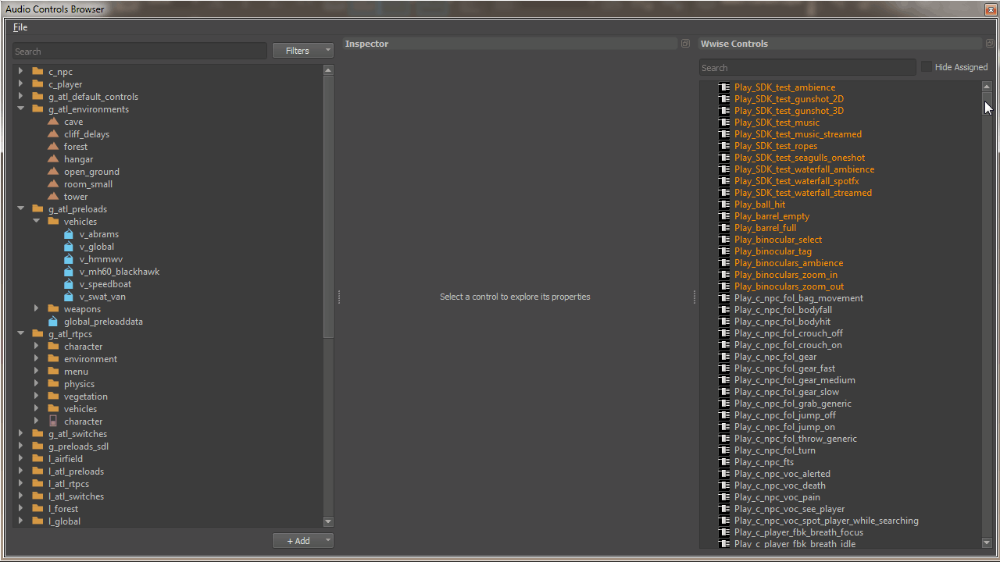
ACB UI при работе с реализацией Wwise
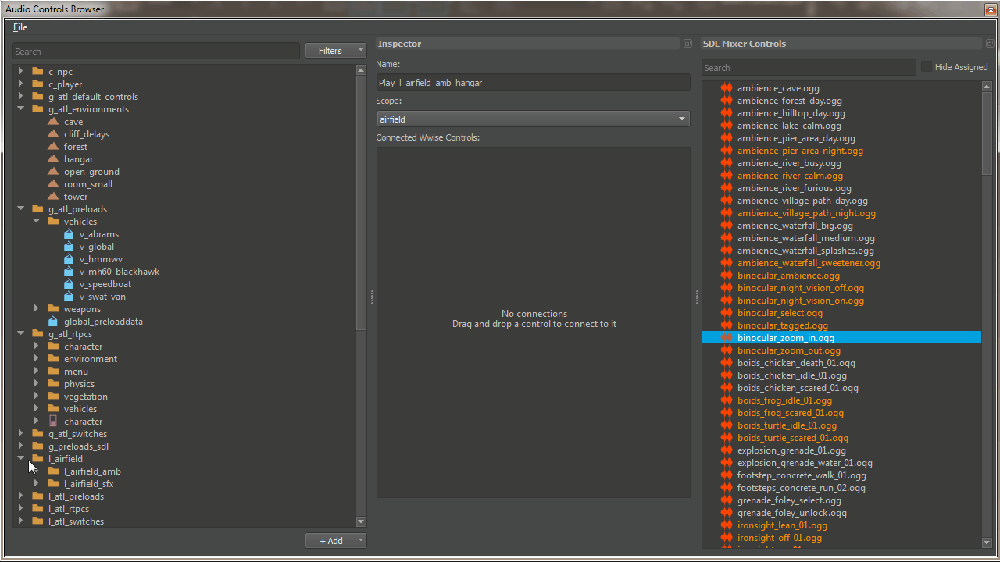
ACB UI при работе с реализацией микшера SDL
- Новый: Представлена реализация звука микшера SDL.
- Новый: (ACB) Элементы управления Wwise также загружаются из подпапок.
- Новый: (ACB) Выполнить управление с помощью клавиши пробела.
- Новый: Поддержка остановки событий в реализации микшера SDL.
- Новый: Сериализация: селекторы ресурсов для типов аудио.
- Исправлено: (CE-5495) Предотвращение сбоя при завершении работы, когда аудиорегистратор обращается к недопустимому указателю cvar.
- Исправлено: (CE-4313) Теперь все звуковые триггеры отключаются на транспортных средствах, которые отпускаются без предварительного вызова сброса.
- Исправлено: (CE-4385) Класс GameAudio больше не пытается анализировать устаревшие аудио XML.
- Исправлено: (CE-4570) Теперь среда AAA сбрасывается после их отключения.
- Исправлено: (CE-4452) запретить выполнение звукового триггера для скрытых объектов.
- Исправлено: (EntitySystem) Прежде чем создавать аудио-прокси по умолчанию, проверьте, используем ли мы реализацию звука.
- Исправлено: Обработчик связи теперь может получать уведомление, когда звук прекращает воспроизведение, чтобы он мог уведомить всех слушателей о событии остановки звука.
- Исправлено: подсчет ссылок на записи AFCM, блокировка запросов на загрузку теперь также приводит к блокировке потока.
- Исправлено: ATS теперь обновляет свое окружение при движении.
- Исправлено: Аудиомодуль теперь выключается последним и при этом не вызывает зависания указателей аудиопрокси.
- Исправлено: Сбой при входе в игровой режим в редакторе.
- Исправлено: Эффекты частиц повторно запускают звук, даже если они не были отключены ранее.
- Исправлено: SDL События микшера по умолчанию настроены на «запуск».
- Исправлено: Оставьте аудиосистему на некоторое время в спящем режиме, чтобы избежать длительного ожидания.
- Исправлено: игнорировать время ожидания в профилировщике функций во время внутреннего обновления.
- Исправлено: Увеличен размер стека WWise Thread, чтобы можно было использовать функции журнала с большим объемом стека CryEngine.
- Оптимизированный: отправлять запросы на обновление положения аудиообъекта, только если они сдвинуты на заданную дельту для введенного нового CVar: s_PositionUpdateThreshold.
- Оптимизированный: удалены устаревшие аудиоинструменты.
Анимация
Система анимации
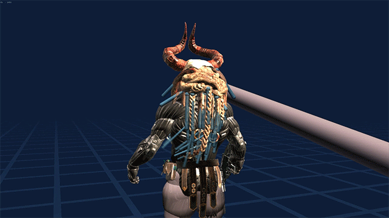
Вторичная анимация, показывающая леденцы в действии для вложений персонажей.
- Персонажи всегда возвращаются в свою позу привязки в начале обновления анимации. В результате вы заметите связанные позы, когда не воспроизводите анимацию, что должно помочь обнаружить подобные ошибки.
- Улучшены или удалены различные предупреждения, ошибки, утверждения, фатальные ошибки и всплывающие окна.
- Blend-пространства:
- Пространства смешивания теперь можно воспроизводить на любом слое анимации (больше не ограничиваясь слоем 0). Пространство смешивания теперь может содержать аддитивную анимацию или анимацию override, однако смешивать разные типы в одном пространстве смешивания нельзя.
- Анимация сращивания (также известная как MotionCombinations) в пространствах смешивания больше не поддерживается. Вы по-прежнему можете использовать специальные слои анимации для достижения того же результата. (например: в GameSDK анимация "оружия", которая раньше была анимацией сращивания, теперь реализована с использованием дополнительных слоев внутри фрагментов Mannequin).
- Разрешите предварительный расчет сетки примера virtual для любого количества измерений и генерируйте данные в файлах BSPACE непосредственно из редактора символов (щелкните правой кнопкой мыши BSPACE, выберите «Сохранить VGrid»).
- Отладка:
- es_debuganim теперь также отображает очередь анимации для вложений объекта.
- es_debuganim (и ca_debugtext) теперь также отображают имя модели перед отображением слоев (чтобы их было легче отличить при отображении нескольких очередей).
- Вторичная анимация:
- Активированные прокси и реакция на столкновение для обычных прикреплений лица и костей (которые не перенаправляются). Его можно редактировать только в редакторе персонажей (вскоре также и в инструменте символов).
- Представлена новая технология Lozenges, которая упрощает физику прикрепления персонажей до 4 цифр и 8 фигур.
- Модификаторы позы:
- OperatorQueue Модификатор: добавлена операция, позволяющая переопределить местоположение сустава в мировом пространстве.
- Экспериментально: добавлена первоначальная реализация управляемых данными «компонентов модификатора позы». Код заключен в ENABLE_RUNTIME_POSE_MODIFIERS и помечен в редакторе как «экспериментальный», что указывает на то, что эта функция, вероятно, изменится в будущем.
- CHRPARAMS:
- Устарела недокументированная функция BBoxExcludeList в CHRPARAMS. Чтобы указать ограничивающую рамку wМы рекомендуем использовать комбинацию BBoxIncludeList (с указанием минимальное количество соединений, чтобы получить разумную ограничивающую рамку) и BBoxExtension (чтобы немного расширить рамку). Чтобы снова включить старую функцию, вы можете включить #define ENABLE_BBOX_EXCLUDE_LIST в ICryAnimation.h, но мы удалим этот код в более поздней версии SDK.
- Неисправная директива #ParseSubFolders из CHRPARAMS теперь игнорируется (для анализа подпапок используйте синтаксис '*/', как описано в документации).
Анимационный конвейер (редактор, RC, ...)
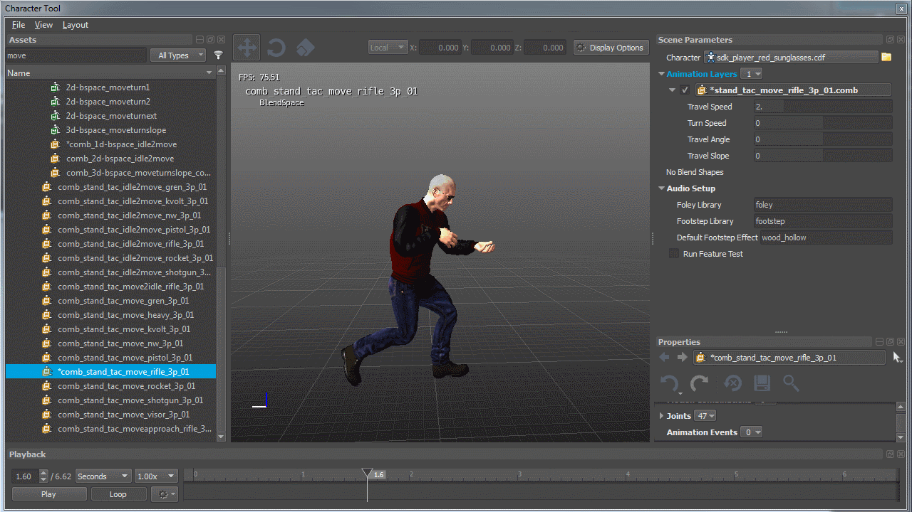
Упрощенное редактирование событий анимации с использованием пользовательских предустановок.
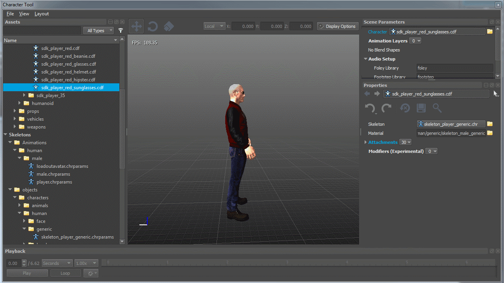
ChrParams редактирование; здесь, например, мы добавляем префикс к именам анимаций всех файлов .comb
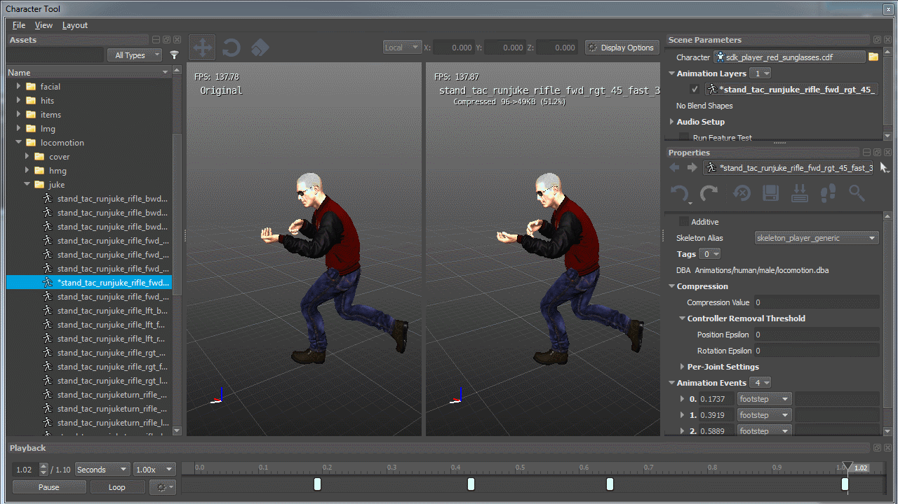
Предварительные настройки сжатия на основе правил; например, примените настройки на основе тегов анимации, как в этом примере
- Знакомство с Character Tool (более подробную информацию см. Character Tool).
- Объединяет редактор персонажей, импортер анимации, редактор сжатия анимации и редактор DBA в одном инструменте с переработанным UI.
- Он действует как браузер ресурсов для файлов, связанных с анимацией.
- Позволяет редактировать CHRPARAMS, хотя не все свойства представлены в этом выпуске, они будут добавлены в следующей версии.
- Может использоваться для проверки содержимого существующих файлов BSPACE и COMB.
- Позволяет определять гибкие правила группировки DBA.
- Добавляет редактор предустановок сжатия.
- Позволяет редактировать экспериментальные Модификатор позы Компоненты.
- Редактор сжатия анимации, импорт анимации и редактор DBA удалены в пользу Character Tool.
- Редактор персонажей устарел в пользу Character Tool и будет удален в будущих выпусках.
- Формат AnimSettings изменен (формат можно обновить, просто сохранив его в Character Tool: Файл->Сохранить AnimSettings...).
- Новый способ определения файлов DBA. Использование dbatable.xml устарело и заменено пресетами DBA, сохраненными в dbatable.json. Поддержка DBATable.xml будет удалена в будущей версии, поэтому пользователям рекомендуется вручную конвертировать DBATable.xml (см. ниже: Преобразование таблицы данных).
- Новый способ определения предустановок сжатия анимации (CompressionPresets.json, работающий совместно с настройками в animsettings).
- Теперь мы разрешаем размещать и обрабатывать анимацию редактором за пределами папки анимаций.
- Отображение статуса фонового диспетчера задач в строке состояния Sandbox (вместе со статусом компиляции текстур). Изменение поведения: теперь мы также отображаем сбои, когда ни одна задача не запущена.
- RC: если файлы CHR содержат имена контроллеров, мы теперь используем их для улучшения сообщений об ошибках во время сжатия. Конвертер Collada->CHR был изменен и теперь также экспортирует эти имена контроллеров.
Исправления анимации
- ResourceCompiler:
- Исправлена ошибка, из-за которой случайные анимации не обрабатывались из-за ошибки в функции PakSystem GetLength().
- Исправлена неинициализированная переменная в фоновой задаче, из-за которой сообщения об ошибках могли не появляться.
- Blend-пространства:
- Пространства смешивания COMB теперь будут выбирать ближайшее BSPACE в случае, если никакие параметры не совпадают напрямую. Затем параметры будут внутренне ограничены выбранными пределами пространства смешивания. Раньше параметризатор выходил из строя без точного совпадения, в результате чего первый пример анимации получал 100% веса.
- Исправлен доступ к массиву за пределами границ в различных местах, когда COMB содержит неизвестный или недействительный BSPACE.
- Небольшое исправление слишком большого размера AABB для маленьких символов (минимальный размер ограничивающей рамки уменьшен до 10 см).
- SkeletonEffectManager::IsPlayingAnimation теперь проверяет все слои анимации, а не только первые 4.
- CHRPARAMS:
- Исправлено несколько ошибок при перезагрузке chrparams (включая неинициализированное состояние ошибки в PoseBlenderAim/LookDesc).
- Лицевая анимация (экземпляр лица):
- Расширение Skeleton теперь работает в сочетании с FacialInstance.
- Исправлена ошибка, из-за которой вращение костного эффектора применялось неправильно. Раньше один эффектор с весом 1 вращался только на половину ожидаемого, теперь он вращается на полную величину. Объединенные преобразования по-прежнему применяются правильно, а перемещение по-прежнему отделяется от вращения, поэтому порядок эффекторов не влияет на результат.
- CModelAnimationSet::GetAnimationDCCWorldSpaceLocation: исправлено неопределенное поведение, когда передаваемая анимация не является CAF; теперь в этом случае всегда возвращается false.
- Смотри и целись IK:
- Исправлена ошибка, из-за которой функция Look & Aim IK некорректно работала со временем очистки и т. д. (теперь используется переданная временная разница, а не среднее значение по времени).
- Исправление ошибок в PoseBlenderAim и возможность синхронизации при сбое подготовки.
- Исправлены несоответствия в проверках количества поддерживаемых поз для прицеливания и взгляда.
- В позах «Прицеливание или взгляд» теперь можно использовать скелеты с более чем 255 суставами.
- Исправлено исключение с плавающей запятой, когда кость имеет нулевую длину.
- Анимация:
- Теперь система воспроизводит аддитивную анимацию на верхних слоях, если в данный момент не воспроизводится базовая анимация.
- Исправлена ошибка, из-за которой анимация, запущенная с флагом CA_FORCE_TRANSITION_TO_ANIM, иногда не воспроизводилась.
- Исправлен взрыв персонажа в режиме перезаписи.
- Исправлено смешивание многослойной анимации.
- Исправлено складывание лиц наизнанку; если в анимации отсутствуют все каналы, ей следует использовать позу привязки.
- Путь к событиям анимации неправильно сбрасывался при использовании расширений скелета.
- Удалена поддержка анимевента с именем «segment4». (поскольку это всегда должно было быть в момент 1).
- Блокировка ног: унифицирована проверка, которая включала/отключала блокировку ног, устраняя некоторые угловые случаи, когда блокировка ног не была включена должным образом.
- Потоковая передача: исправлена некорректная статистика кучи дефрагментации для фиксированных выделенных ресурсов.
- Модификаторы позы:
- Теперь очищается очередь модификаторов позы, когда персонажи находятся за кадром, чтобы избежать переполнения очереди модификаторов позы.
- DBA Файлы:
- Исправлен сбой, когда DBA содержит анимацию с более чем 255 контроллерами.
- Исправлен сбой при загрузке файлов DBA, содержащих более 8192 анимаций.
- Отладка:
- Исправлен сбой при использовании ca_debugAnimUsage с отсутствующими файлами DBA.
Изменения в анимации API
- Упростилось использование интерфейсов CryAnimation в «const правильном» коде: функции в интерфейсах CryAnimation, которые могут быть const, теперь называются const; также добавлены варианты const, где это возможно.
- IAnimationSet:
- GetDuration_sec() теперь никогда не возвращает отрицательные значения.
- Добавлена SampleAnimation(), базовая функция для выборки любого контроллера в анимации CAF.
- Только для редактора: добавлены новые функции, такие как GetSubAnimations(), IsCombinedBlendSpace() и т. д., чтобы редактор мог узнать больше об анимации во время выполнения.
- ICharacterInstance:
- GetOjectType() переименован в GetObjectType().
- Удалены IgnoreScaleForJoint()/CustomScaleForJoint() и SetUniformScale(). Первые два — неполные функции, последний не нужен: вы можете использовать масштаб в параметре locationAnimation для StartAnimationProcessing.
- ISkeletonPose:
- Удален SetPostProcessQuat().
- ISkeletonAnim:
- Открытый слой анимации скелета считается как ISkeletonAnim::LayerCount. Удалены все жестко закодированные значения количества слоев, которые мы смогли найти.
Mannequin
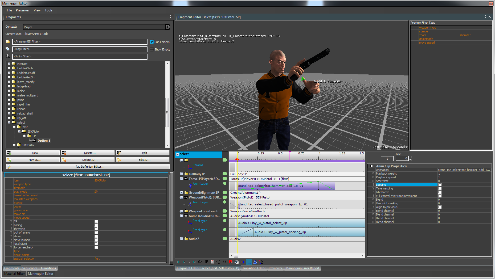
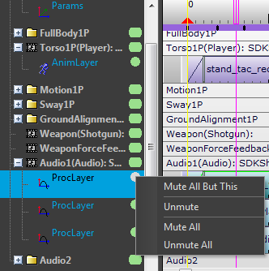
- Новый формат процедурного клипа:
- Более строгая типизация свойств клипа.
- Сценарии/Mannequin/ProcDefs.xml больше не нужны, теперь все доступно через структуру сериализации.
- Преобразование осуществляется автоматически с помощью
Scripts/Mannequin/ProcClipConversion.xmlфайл. - Если у вас есть процедурные клипы, созданные на заказ, вам необходимо отредактировать файл ProcClipConversion, чтобы они также автоматически конвертировались. Более подробная информация здесь: Параметры процедурного клипа с использованием платформы сериализации.
- Редактор Mannequin:
- Различные настройки и исправления удобства использования (навигация по вкладкам, просмотр с помощью клавиш со стрелками, копирование дорожек и т. д.).
- Щелкнув правой кнопкой мыши анимационный клип, пользователь может отредактировать исходный ресурс, будь то файл blend-space или Maya. (см. Mannequin Свойства анимационного клипа)
- Щелкнув правой кнопкой мыши по анимационному клипу, пользователь может найти все переходы, относящиеся к этому же клипу. (см. Mannequin Свойства анимационного клипа)
- Браузер переходов теперь может фильтровать переходы на основе названий анимации.
- Щелчок средней кнопкой мыши + перемещение мыши по временной шкале теперь всегда будет перемещать время.
- По умолчанию время отображается в кадрах.
- Области или отдельные слои можно отключить. Другими словами, их можно временно отключить. (см. Mannequin Свойства трека)
- Добавление Список использованных анимаций инструмент.
- Редактор теперь сохраняет только файлы, относящиеся к редактируемому в данный момент проекту.
- Добавлена функция «Реэкспортировать все». Это загрузит все файлы манекена и попытается их сохранить.
- Исправлен предварительный просмотр аддитивной анимации на верхних слоях, если в данный момент не воспроизводится базовая анимация (CE-4754).).
- Браузер фрагментов: поддержка копирования и вставки наборов фрагментов, а также добавление специальной функции вставки для изменения тегов во время вставки (Ctrl+Shift+V). (см. Mannequin Браузер фрагментов)
- Исправлен сбой при обновлении Perforce с открытым редактором, но без экземпляра редактора Mannequin.
- Узлы потока:
- Узлы Mannequin перенесены с GameSDK на CryAction. (см. Mannequin Flowgraph)
- Добавлен узел потока для прослушивания событий, вызванных специальным процедурным клипом. См. Actor:ProcClipEventListener и клип процесса "FlowGraphEvent".
- Процедурные изменения клипа: (см. Список процедурных типов клипов)
- Процедурный клип ParticleEffect теперь может явно ссылаться на интерфейс вложения или соединение ID.
- Процедурный клип ParticleEffect теперь имеет логическое поле «Keep Emitter Active», позволяющее запускать эффекты со сроком службы дольше, чем у клипа. Процедурный клип управляет процедурным контекстом.
- Процедурный клип SoundMood удален (не нужен для новой аудиосистемы).
- Процедурный клип ForceFeedback теперь имеет флаг, позволяющий активировать принудительную обратную связь только локально.
- Исправлен отсутствующий процедурный клип CompromiseCover.
- Аудио-проклип представлен вместе с введением слоя аудиоперевода. На данный момент этот procclip аналогичен устаревшему procclip PlaySound.
- Система:
- SCA исправления в коде модели.
- Изменение API: интерфейсы public, работающие с IActions, теперь принимают ссылки вместо интеллектуальных указателей, чтобы было ясно, что они не принимают указатели NULL.
- Экспериментальное: добавлен новый метод OnActionFinished virtual в IAction, позволяющий клиенту знать, когда фрагмент достигает заданной пользователем точки завершения. Это может использоваться клиентским кодом для принятия решения о том, какое действие выполнять следующим, не дожидаясь обратного вызова Exit(), что обеспечивает удобный способ устранения «замороженных» переходов. Редактирование для этого пока не включено в этой сборке, но некоторый исходный код можно включить, включив MANNEQUIN_BLENDOUT_EDITING в коде FragmentTrack.cpp в редакторе.
IAction::ComparePriority (см. Mannequin Действия) ) теперь также вызывается во время CActionController::PushOntoQueue(), чтобы обеспечить совместимость с CActionController::TryInstalling(). Если вы используете override IAction::ComparePriority() в действии, убедитесь, что порядок четко определен (a.ComparePriority(b) должен возвращать противоположность b.ComparePriority(a)). Если раньше вы просто возвращали «Выше» и выполняли несколько действий с одинаковым приоритетом в одном кадре, вы можете использовать что-то вроде следующего, чтобы убедиться, что очередь по-прежнему ведет себя как FIFO:
virtual EPriorityComparison ComparePriority(const IAction& actionCurrent) const { return (IAction::Installed == actionCurrent.GetStatus() && IAction::Installing & ~actionCurrent.GetFlags()) ? Higher : IAction::ComparePriority(actionCurrent); }
DbaTable Конверсия
Ниже вы найдете информацию о том, как преобразовать файл DBATable из XML в новый формат JSON.
Изначально файл DbaTable.xml содержал список CAF-файлов, сгруппированных по DBA.
Это оказалось подвержено ошибкам и требовало регулярного вмешательства технического специалиста для обновления новых добавленных анимаций.
Чтобы сократить расходы на обслуживание, в SDK 3.7 был представлен новый способ определения DBA. Он отличается следующим:
- Вместо перечисления отдельных файлов анимации можно определить условие фильтрации для каждого DBA. Он выбирает анимацию на основе определенных критериев. Например, по местоположению файла, подстроке имени или назначенным определенным тегам.
- Условия могут быть объединены логическим выражением в сложные условия.
- Имя файла, используемое для хранения таблицы, изменено с DBATable.xml на DBATable.json (внутренне оно также преобразуется в JSON).
- Больше нет необходимости редактировать вручную: DBATable.json можно редактировать и отлаживать с помощью Character Tool.
Поскольку предыдущий формат не содержал никакой высокоуровневой информации, преобразование необходимо выполнять вручную.
Ниже приведен пример такого преобразования на основе ресурсов SDK.
<DBAs>
<DBA Path="Animations\human\male\hits_1p.dba">
<Animation Path="Animations\human\male\hits\1p\stand_tac_hit_generic_add_1p_01.caf"/>
<Animation Path="Animations\human\male\hits\1p\stand_tac_hit_knockDown_1p_01.caf"/>
<Animation Path="Animations\human\male\hits\1p\stand_tac_idle_reactExplosion_3p_01.caf"/>
</DBA>
<DBA Path="Animations\human\male\hits_3p.dba">
<Animation Path="Animations\human\male\hits\3p\coverHigh_idleBasic_com_lft_hit_back_01.caf"/>
<Animation Path="Animations\human\male\hits\3p\coverHigh_idleBasic_com_lft_hit_front_01.caf"/>
<Animation Path="Animations\human\male\hits\3p\coverHigh_idleBasic_com_rgt_hit_back_01.caf"/>
<!-- ... -->
</DBA>
<DBA Path="Animations\human\male\locomotion.dba">
<Animation Path="Animations\human\male\locomotion\kneel\kneel_tac_AimPoses_idle_01.caf"/>
<Animation Path="Animations\human\male\locomotion\kneel\kneel_tac_death_01.caf"/>
<Animation Path="Animations\human\male\locomotion\kneel\kneel_tac_idle_01.caf"/>
<!-- ... -->
</DBA>
<!-- ... -->
</DBA>Аналогичная настройка с новой системой будет выглядеть следующим образом:
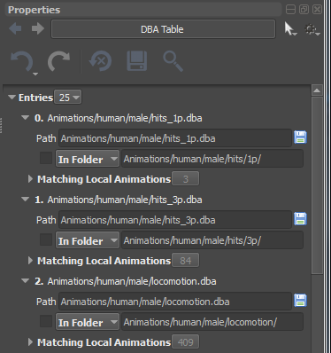
Вы можете обратиться к Character Tool документации, чтобы подробно узнать, как определить фильтр анимации.
Если вы хотите выполнить автоматическое преобразование самостоятельно, файлы, сохраненные с помощью Character Tool, будут выглядеть следующим образом:
{
"entries": [
{
"path": "Animations/human/male/hits_1p.dba",
"condition": { "inFolder": { "path": "Animations/human/male/hits/1p/" } }
},
{
"path": "Animations/human/male/hits_3p.dba",
"condition": { "inFolder": { "path": "Animations/human/male/hits/3p/" } }
},
{
"path": "Animations/human/male/locomotion.dba",
"condition": { "inFolder": { "path": "Animations/human/male/locomotion/" } }
}
} Из-за ограничения ResourceCompiler инкрементальные сборки не могут быть выполнены после удаления старого DBATable.xml. Обязательно удалите предыдущее состояние сборки (в частности, rc_createdfiles.txt, по умолчанию созданное в папке исполняемого файла RC Bin64/rc/), иначе файлы CAF могут быть созданы не так, как ожидалось.
Что делать, если вам нужна более сложная логика при выборе анимации?
Например, здесь мы исключаем папку /poses/ из locomotion.dba, а также все анимации, в названии которых есть слово «kick»:
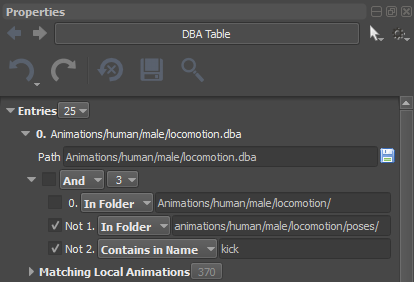
AI Система
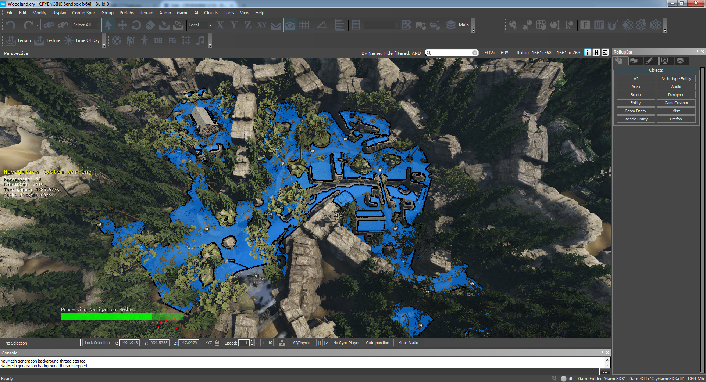
Многопоточная обработка NavMesh может значительно ускорить обработку областей MNM.
- Новый: Многопоточные системы AI: добавлена переменная ai_NavGenThreadJobs CVar, позволяющая контролировать количество потоков, которые навигационная система может использовать для обработки сеток.
- Новый: первая итерация рефакторинга MovementSystem для отделения PipeUser от системы. Теперь необходимо предоставить MovementActor реализацию адаптера, который должен обеспечить реализацию необходимой функциональности для использования функций AISystem.
- Новый: идентификатор связанного объекта как наблюдателя, так и наблюдаемых параметров теперь можно изменить.
- Исправлено: (CE-5313) Режим отладки для переменных дерева модульного поведения теперь привязан к цели отладки ai, а не к переменной ai_DebugBehaviorVariables (которая теперь удалена).
- Исправлено: (CE-4958) Исправлена настройка обратного вызова OnPropertyChanged для SmartObjects при выборе нескольких одновременно.
- Исправлено: (CE-5023) NavigationSystem: изменен BAI_NAVIGATION_FILE_VERSION, поскольку struct MNM::Tile::Triangle больше не совместим со старыми версиями.
- Исправлено: (CE-5251) Удаление только дополнения в случае удаления смарт-объекта. Удаление ссылки все равно должно быть выполнено, так как нам необходимо уведомить навигационную систему.
- Зафиксированный: (CE-5356) MBT SDK_Grunt_07.xml: оружие больше не хранится в поддереве Idle, а непосредственно перед переходом в это дерево.
- Исправлено: (CE-5300) CollisionAvoidanceSystem: удалена эвристика, чтобы минимизировать случай, когда агент застревает на краю коридора, избегая стоящего агента (линия ограничения больше не меняется внезапно).
- Исправлено: (CE-5108) Исправлен сбой OffMeshNavigationManager при использовании смарт-объектов.
- Исправлено: (CE-5183) Исправьте вызовы SetSwitchState в CommunicationHandler. Теперь вызовы происходят только в том случае, если есть значение для переключения, поэтому мы должны получать только действительные предупреждения. Также исправлено предупреждение об отсутствии «состояния переключателя», а не «переключателя».
- Исправлено: (CE-5482) Исправлено управление ссылкой IPhysicalEntity с помощью карты обзора.
- Исправлено: Сбой при перемещении реки во время генерации MNM.
- Исправлено: SDK_Grunt_07.xml: удалены некоторые узлы StopMovement, чтобы избавиться от ненужных резких остановок перед переходом в бой, и исправлено подергивание анимации в режиме ожидания.
- Исправлено: Изменения в движке, позволяющие AISystem создавать и возвращать значение по умолчанию PathFollower. Пользователи могут указать PathFollowerParams и IPathObstacles, которые следует использовать с созданным следопытом.
- Исправлено: AIMoveSimulation теперь напрямую использует систему движения, а не проходит через ворота.
- Исправлено: доступ к интерфейсу AgentDebugTarget системы AI.
- Исправлено: добавление действия ввода для запуска визуализации отладки агента AI (будет сопоставлено клавише /).
- Исправлено: добавление базового расширения AI для актера, которое будет служить базой для конкретных расширений игровых объектов актера AI.
- Исправлено: добавление модульного расширения актера дерева поведения, которое позволит актерам выполнять действия.
- Исправлено: Расширение модульного дерева поведения теперь регистрирует и обрабатывает события актеров.
- Исправлено: Исправлено поведение выбора, теперь вы можете выбирать родительские группы, которые не являются сетками.
- Исправлено: Загрузить дерево поведения из узла XML.
- Исправлено: Модульное дерево поведения теперь также может загружать файлы из папки libs/ai/behavior_trees/.
- Исправлено: VisionMap: добавлены настраиваемые флаги raycast.
- Исправлено: Добавление помощника карты визуализации для добавления объектов в список пропуска наблюдателей или наблюдаемых параметров.
- Исправлено: Удаление ненужных включений из заголовочного файла компонента тактических очков.
- Зафиксированный: Добавление генератора «чистой сетки» в систему TPS.
- Исправлено: Добавление объекта «entity» в систему TPS.
- Исправлено: прекращение поддержки узла, специфичного для персонажа-сталкера Crysis 3, который все еще определялся в системе AI.
- Исправлено: запросы TPS теперь перезагружаются на RESET_ENTER_GAME в режиме редактора или на RESET_LOAD_LEVEL.
- Исправлено: Добавление концепции доски в модульное дерево поведения, которую узлы могут использовать для обмена информацией друг с другом.
- Исправлено: добавлена встроенная поддержка отправки событий в деревья поведения.
- Исправлено: Сделана отладка модульного дерева поведения для работы с любыми объектами, а не только с актерами AI. Теперь вы можете посмотреть на объект, запускающий дерево поведения, и нажать клавишу «косая черта» на цифровой клавиатуре, чтобы начать отладку.
- Исправлено: TacticalPointSystem: результат свойства "reachable" не был возвращен вызывающему коду.
- Исправлено: Сбой в CSmartObjectsManager при снятии флажка со всех классов SmartObject.
- Исправлено: MNM::MeshGrid::SetTile() защищал от неверных входных параметров только в 1 из 3 случаев.
- Исправлено: запросы TPS теперь должны иметь записи в таблицах весов и генерации, чтобы защититься от неопределенного поведения.
- Исправлено: Точка выхода из ссылки вне сетки должна храниться как NAV_UNSET в NavPath, а не иметь тот же тип, что и точка входа.
- Исправлено: контейнер результатов запроса взаимодействия AI увеличен с 32 до 48, чтобы исключить ложные предупреждения.
- Исправлено: передать параметр lowerPrecision вместо использования жестко запрограммированного значения false внутри PipeUserMovementActorAdapter::RequestExactPosition.
- Исправлено: функция сброса расширения модульного дерева поведения.
- Исправлено: Положение препятствия не обновляется после завершения лучевой передачи.
- Исправлено: Регистрация наблюдаемых объектов на карте обзора теперь корректно сохраняет всю информацию из параметров (до того, как связанный параметр объекта не был правильно добавлен).
- Исправлено: Код навигационной системы теперь может корректно обрабатывать случаи, когда экспортированные данные содержат ссылки на неправильно настроенных актеров или сетки, которые невозможно создать.
- Исправлено: сбросьте pathfollower при присоединении нового пути, поскольку последняя версия хранилища путей и внутренние значения все еще могут ссылаться на старый путь, который больше не является действительным.
- Исправлено: Всегда устанавливайте флаг ENTITY_FLAG_TRIGGER_AREAS для Актеров, чтобы AreaManager мог обрабатывать Актеров в сетевой игре. Обратите внимание, что логика фактического запуска триггера области выполняется в AreaTrigger.lua. Файл lua проверяет, является ли Actor клиентом или нет, а также другие свойства, установленные в редакторе.
- Зафиксированный: Узел конечного автомата из модульного дерева поведения теперь проверяет наличие минимального количества состояний, предотвращая использование его таким образом, который может привести к сбою: BehaviorTree::StateMachine::Update.
- Исправлено: SDK_Grunt_07 теперь использует «расслабленную» позицию в состоянии ожидания.
- Исправлено: CVisionMap::IsInFoV() учитывал не все наблюдаемые позиции.
- Исправлено: Функция предотвращения столкновений не учитывала CAIPlayers (CE-5523).
- Исправлено: SDK_Grunt_07: в задании DefendArea ИИ теперь перемещаются в более случайную позицию вокруг центра этой области.
- Оптимизированный: изменено положение отрисовки отладочной коллекции переменных.
- Оптимизированный: Из событий удалена зависимость с интерфейсом IAISignalExtraData системы AI.
- Оптимизированный: Удалена концепция диспетчера событий из модульного дерева поведения, так как его функциональность устарела и его использование отличалось от поведения функций обработки событий менеджера (метки времени и переменные поведения не обновлялись).
- Оптимизированный: первый шаг рефакторинга кода CMNMPathfinder для раскрытия некоторых структур, которые потребуются для многопоточности кода. Перемещение m_processingRequestData в m_processingRequest. Разделите обновление NavigationSystem на три последовательных этапа: 1-запись => 2-чтение => 3-отправка. Удалите неправильный выпуск, вызванный для смарт-объекта, содержащего путь в PathAgentExtension. Когда агент отменяет запрос MNMPathfinder, нам также необходимо очистить события, которые, возможно, уже готовы к отправке агентам. Удаление параметра pathCount из структуры Triangle.
- Оптимизированный: переместите MovementRequestID в его собственный заголовочный файл, чтобы избежать необходимости включать весь MovementRequest, когда требуется только определение идентификатора.
- Оптимизированный: Исправлена опечатка в системе связи. Перефразировал несколько комментариев к узлам MBT.
- Оптимизированный: Typedefed boost::shared_ptr<BehaviorTreeInstance> до BehaviorTreeInstancePtr.
- Оптимизированный: Открытая функциональность для запуска и остановки деревьев поведения через интерфейс менеджера дерева поведения.
- Оптимизированный: Удалена некоторая избыточность в коде событий модульного дерева поведения. Также добавлен дополнительный private для лучшей читаемости.
- Оптимизированный: Изменены ID менеджера связи для использования CRC, поскольку текущая функция хеширования была плохой из-за сбоя при наборе сообщений, которые мы пытались добавить, из-за длины строки, из-за которой она пропускала неизмененные символы и приводила к конфликту хэшей. AI Средство отладки рендеринга теперь рисует текст в моноширинном режиме. Интеграция системы VisionMap. Интеграция визуализатора дерева.
- Оптимизированный: функции IsPointReachableFromPosition теперь получают указатель IEntity вместо IAIPathAgent. Также переименовываем имя переменной, чтобы было понятно цель использования этого указателя.
- Оптимизированный: функция GetSmartObjectLinkCostFactorForMNM, позволяющая передать в FindSmartObjectLinks список состояний для исключения из сопоставления состояний смарт-объекта вместо передачи отфильтрованного списка, требующего векторной копии (для нескольких вызовов в одном кадре это очень дорого).
Игра
- Новый: (Сеть) [NetMessageDistpatcher] Новая система для отправки простых сообщений от клиента к серверу и наоборот, включая узлы потокового графа для дизайнеров.
- Новый: добавлена логика и переменные переменные для управления способностью игроков дышать/утопать (CE-5061).
- Новый: Предоставлять доступ к объектам в области через прокси-сервер области объектов.
- Новый: привяжите одного или нескольких независимых слушателей к карте действий.
- Новый: Восстановлен USM_Player.fla.
- Исправлено: (CE-5171) Предупреждающее сообщение «Слишком много активных силуэтов» появляется, хотя этого не должно быть.
- Исправлено: (CE-5034,4155,5113) (Сеть) Больше не предполагается, что HUD всегда присутствует, чтобы предотвратить плавание HUD во время воспроизведения killcam.
- Исправлено: (CE-5342) (Транспортное средство) В пользовательской анимированной геометрии шарнирных деталей нельзя использовать материал краски автомобиля. Добавлен новый параметр сценария «usePaintMaterial».
- Исправлено: (CE-5354) (CryAction) Транспортное средство: Гусеница бака не раскачивается.
- Исправлено: (CE-5270) (EntitySystem) CScriptBind_Entity::SetLinkTarget() проверял неправильный параметр
- Исправлено: (CE-5146) (UI) Клиенты могут присоединиться только к серверу, находящемуся вверху списка серверов.
- Исправлено: (CE-5279) (UI) Flash хочет установить флаг «цикла» для USM_Player.gfx.
- Исправлено: (CE-5188) (UI) MP Функциональность чата нарушена.
- Исправлено: (CE-5426) (UI) Скорость набора текста миссии слишком низкая.
- Исправлено: (CE-5409) (UI) Цели миссии — удерживайте вкладку, чтобы продлить подробности миссии только на 1/2 раза. Исправлена ошибка, из-за которой информация о новой миссии закрывалась, если старая миссия была решена прямо перед этим.
- Исправлено: (CE-5467) (UI) Добавлен расчет, учитывающий различное время кадра при отображении сообщений миссии.
- Исправлено: (CE-5236/5223) (UI) Если вы провалите заданную миссию, часть UI, касающаяся текста миссии, больше не будет работать. Если следующая миссия не установлена, сведения о предыдущей миссии остаются активными. Различные небольшие исправления и улучшения блок-схемы целей.
- Исправлено: (CE-4386) Перезарядка оружия не работает, когда на экране отображается сообщение об использовании.
- Исправлено: (CryAction) Состояние обновления GameObjects зависло на "FarAway".
- Исправлено: (Сеть) CRASH: GFxAmpServer::SetState на выделенном сервере.
- Зафиксированный: (Сеть) Сбой в CSimpleHttpServer при невозможности привязки к адресу.
- Исправлено: (Сеть) Добавлены отсутствующие проверки PTR NULL для предотвращения сбоев на выделенном сервере.
- Исправлено: (Сеть) Сбой при выходе из выделенного сервера.
- Исправлено: (Сеть) Сбой при выключении выделенного сервера.
- Исправлено: (Сеть) Потенциальный FPE на сервере, когда все клиенты отключаются.
- Исправлено: (EntitySystem) Неверное/дублированное утверждение в загрузчике объектов.
- Исправлено: (Ввод) ForceFeedback: проверьте DeviceType вместо DeviceId.
- Исправлено: (UI) HUD не отображается после прерывания последовательности просмотра трека (CE-5481).
- Исправлено: Удалить жестко запрограммированную зависимость «ActorEntity» в EntitySystem.
- Исправлено: не превращайте игроков в тряпку, если включен режим бога.
- Исправлено: Сбой в IGameObject::SetGameObject.
- Исправлено: Сбой при возрождении персонажа.
- Исправлено: Группы появления Включить/Отключить без обновления списка точек появления.
- Исправлено: ошибка LUA, когда AreaTrigger:Event_Enter вызывается напрямую (например, TrackView), а не генерируется реальным объектом, входящим в область.
- Исправлено: Используйте после бесплатного использования в CVehicleSeat::StandUp.
- Исправлено: Использовать после освобождения в ~CFlashUI (используемый пул CryName уже уничтожен).
- Оптимизированный: (CE-5270) (EntitySystem) Несколько функций привязки скриптов, связанных со ссылками на объекты.
- Оптимизированный: (Сеть) #if !define(DEDICATED_SERVER) ifdefs заменено на проверки во время выполнения.
- Оптимизированный: Упрощение изменений в системе карт действий.
Активы
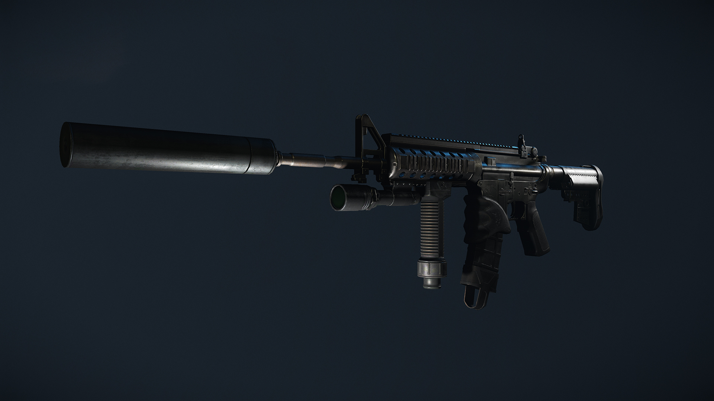 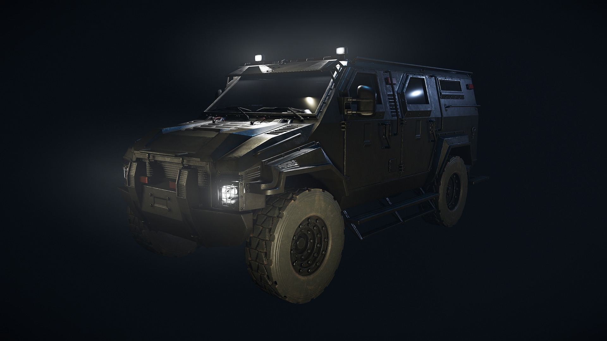 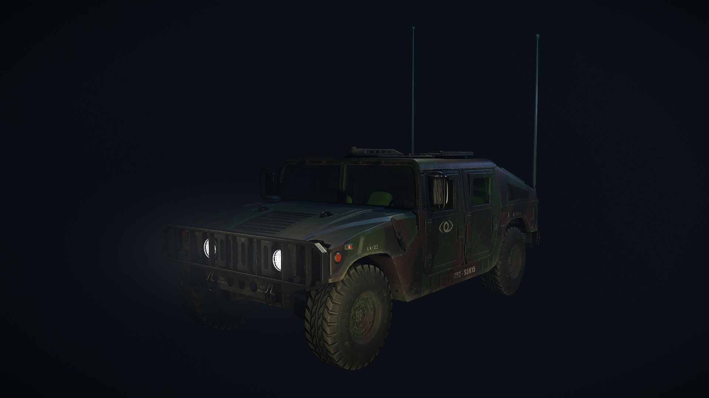 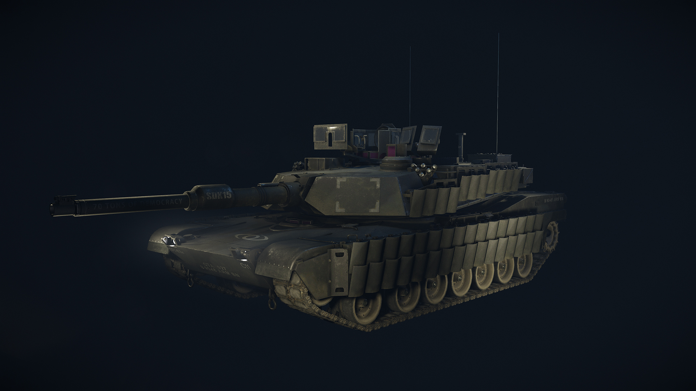
- Новый: добавлено новое винтовочное оружие и аксессуары.
- Новый: добавлен новый автомобиль Swat Van и аксессуары.
- Новый: добавлен новый автомобиль Hmmwv и аксессуары.
- Новый: добавлен новый автомобиль Abrams и аксессуары.
- Новый: добавлен новый автомобиль Blackhawk и аксессуары.
- Новый: обновлен сценарий Abrams для соответствия новым активам.
- Новый: добавлена настройка HMG Mannequin и несколько дополнительных анимаций.
- Новый: Добавлен пистолет+флаг Mannequin для прицеливания.
- Новый: добавлена настройка friendly_leave по умолчанию. Установите для параметра nwdlepose значение nw анимация вместо винтовки.
- Новый: Добавлено несколько новых деревьев и камней.
- Новый: Добавлены различные новые текстуры/материалы дорог и исходные файлы для новых/старых текстур.
- Новый: добавлено несколько примеров материалов и текстур ландшафта.
- Новый: добавлен MergedMeshSurfaceType.xml, используемый для настройки звука столкновений объединенной сетки.
- Новый: добавлено множество новых настроек текстур и материалов PBR: бетон, кирпич, металл, дерево и т. д.
- Новый: добавлены активы изгороди из самшита.
- Новый: Добавлена поврежденная версия катера. Удален неиспользуемый CGF. Запущена версия Anims для пропеллеров/руля.
- Исправлено: (CE-5063) Удален код <MotionCombination> из файлов bspace/comb (устаревший метод) во фрагменты Mannequin как слои анимации.
- Исправлено: (CE-5237) HUD невидим. Изменен тип текстуры материала HUD во Flash-текстурах на «Динамический 2D» вместо «Авто-2D», чтобы не конфликтовать с отражениями в воде.
- Исправлено: (CE-4933) Граната не взорвется, если подбросить ее прямо вверх. Также исправлен случай нахождения в воде. В столбце mat_default отсутствуют записи об опыте.
- Исправлено: (CE-4420) Теплица: разбейте несколько кусочков стекла, которые не должны были соединяться. Отдельная сетка прокси возвращается (объединять не нужно). Удалены ненужные разделы прокси. Установите для типа поверхности материала прокси значение «Металл» (тип поверхности «Стеклянная» вызывал ошибки).
- Исправлено: (CE-5436) Материал Wall_decal на объекте «Ангар» заменен на текстуру кирпича.
- Исправлено: (CE-5503) Удалены ресурсы cloth_2. Переработан материал для основного актива ткани. Экспортированы версии низкого и высокого качества (тесселяция 2x/0,5x). Удалены уродливые старые текстуры.
- Исправлено: (CE-5600) Увеличено разрешение до 1k и воссозданы текстуры спрайтов dirt_bullet с использованием слегка измененных альфа-текстур крови и многослойных диффузных текстур грязи.
- Исправлено: (CE-4310) Добавлены события RPG и HMG в настройку AI Mannequin для звука.
- Исправлено: (CE-5660) Добавлена настройка фрагмента MotionMove для AI RPG.
- Исправлено: (GeomCache) Воспроизвести stone_toad по памяти.
- Исправлено: добавлено общее событие blend_out+стендап (удалено событие с дробовиком, в котором использовалась анимация винтовки). Добавлены события RocketLauncher: выбор/отмена выбора/рукопашный бой.
- Исправлено: Обновлен файл skeleton_player_generic.chrparams для версии 3.7: удален неподдерживаемый defaultlookpose и заменен bboxexcludelist на bboxincludelist и bboxextension.
- Исправлено: Сглажен прокси-сервер canyon_path_a, чтобы игрок не зависал.
- Исправлено: Персонаж теряет сознание при скольжении с гранатой в режиме 3P.
- Исправлено: Персонаж использует позу винтовки при повороте с гранатой в 3P.
- Исправлено: изменены существующие материалы и текстуры ландшафта. Удалены DDN, созданы DDNA. Переименованы несколько ресурсов для ясности/соответствия.
- Исправлено: Преобразован DBATable в новый формат (с условиями фильтра анимации).
- Исправлено: обновлены все вражеские и дружественные персонажи AI в списке архетипов, теперь они используют CommConfig = Human.
- Исправлено: обновлен ящик с боеприпасами с улучшенными текстурами, добавлено несколько вариантов цвета и материалов. Упрощенные материалы без неиспользованных подматов.
- Исправлено: Обновлен материал и текстуры теплицы. Реэкспортированы сетки без ненужного дополнительного подмата, объединены прокси в основную рендер-сетку. Увеличено разрешение текстур. Карта оттенков сохранена как _Tint, а не как _Spec.
- Исправлено: Неправильный тип поверхности на песчаных материалах.
- Исправлено: Обновлены текстуры ground_cover_nofern diff/ddna до 1024 с 512.
- Исправлено: в Human.adb отсутствовали теги для позиции «Предупреждено» в некоторых идентификаторах фрагментов.
- Оптимизированный: (CE-5295) (Активы) Экспортированы все CGF из сцены editor_helpers Max и указание на helper.mtl, чтобы сохранить единообразие и позволить удалить ненужные уникальные материалы. Удалены дубликаты файлов Max (уже существуют в editor_helpers Max). Удалены объекты, которые кажутся бесполезными/сломанными (все еще существуют в editor_helpers Max) и не используются в коде/скриптах. Alienenergypoint переименован в Energypoint для универсальности. Исправлены опечатки в некоторых именах файлов. Добавлены версии градиентных текстур в формате .tif в формате .dds. Требуется обновление сценариев сборки для обработки папки редактора, поэтому пока оставляем .dds. Сделал имена файлов строчными. Реэкспортированы SO c2/c3 и добавлен исходный файл Max. Пересохранил несколько материалов с актуальными настройками. Реэкспортированы все mtlobjects, ссылающиеся на материал mtlobjects, добавлен Box в максимальную сцену.
- Оптимизированный: Аэродром: Добавлены небольшие самолеты в виде физизированных RigidBodies. Округленные значения в TOD. Оптимизированы некоторые декали и кисти. Убраны довольно бессмысленные огни внутри Джетов.
- Оптимизированный: Обновлено SkeletonList: Реорганизовано в группы в алфавитном порядке. Удалены устаревшие записи. Добавлены записи о ракетной установке и HMG.
- Оптимизированный: удалены ресурсы «gun_mounted», переустановлен как «mounted_gun», чтобы соответствовать имени папки. Экспортированы модели FP и TP. Настройте CDF/CHR/CHRPARAMS. Добавлен дескриптор чувствительности анимации подделки. Подчищен скрипт оружия HMG.
- Оптимизированный: Обновлен скрипт Hmmwv для учета новых изменений активов. Изменено управление и повреждения. Удалены устаревшие дополнительные просмотры от 3P. Добавлен мод "NoBullBar" и краски для вариаций.
- Оптимизированный: настройки манекена HMMWV переименованы с «Транспортное средство» на «hmmwv». Использование символов подчеркивания вместо camelCase в именах файлов.
- Оптимизированный: текстуры дорог переименованы в «лесные». Изменены многочисленные текстуры дорог. Добавлены текстуры дороги DDNA.
- Оптимизированный: Удалить потерянный ресурс rock_large01 без прокси и исходного файла (CE-4142).
- Оптимизированный: несколько ресурсов персонажей-животных перенесены в более конкретные подпапки.
- Оптимизированный:Guardhouse: Удалена настройка прокси double. Удалены неиспользуемые субматы. Подправленный материал.